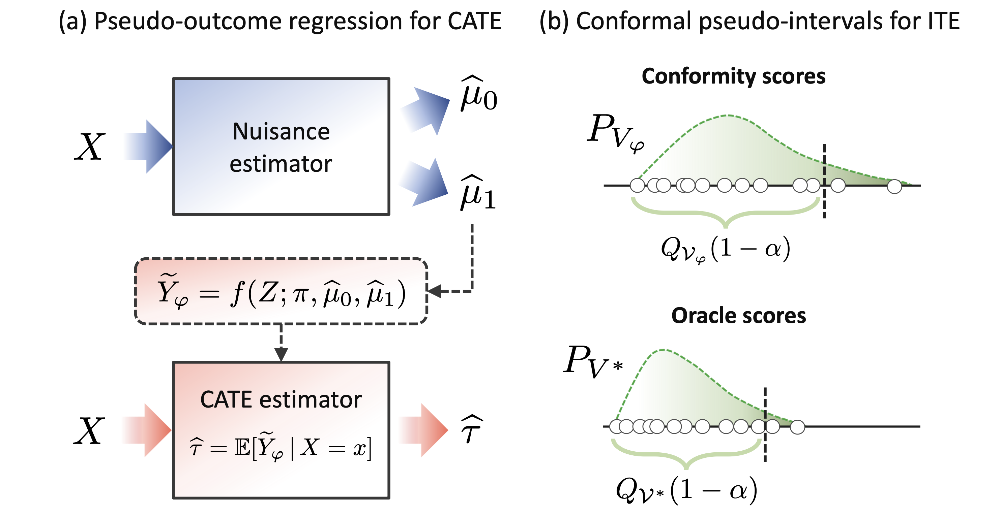
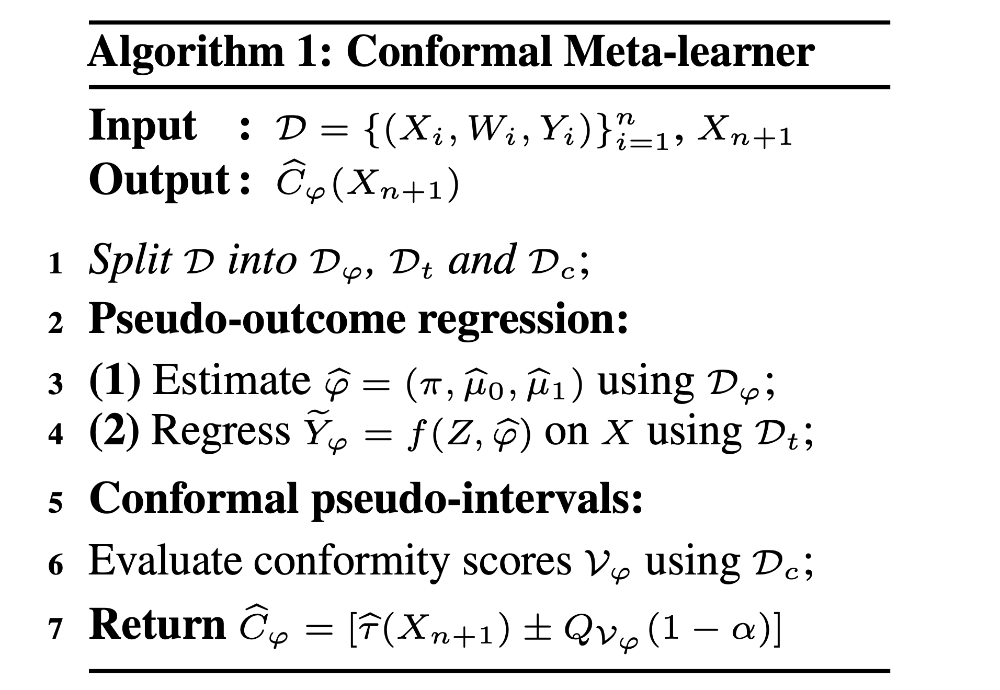
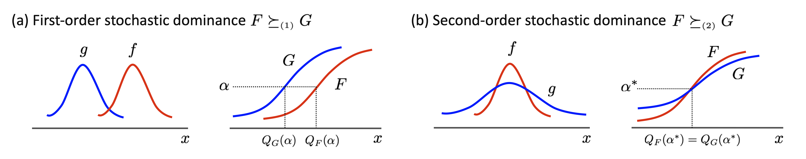
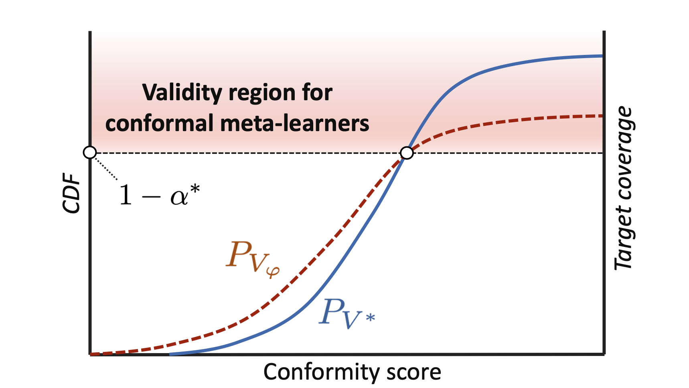
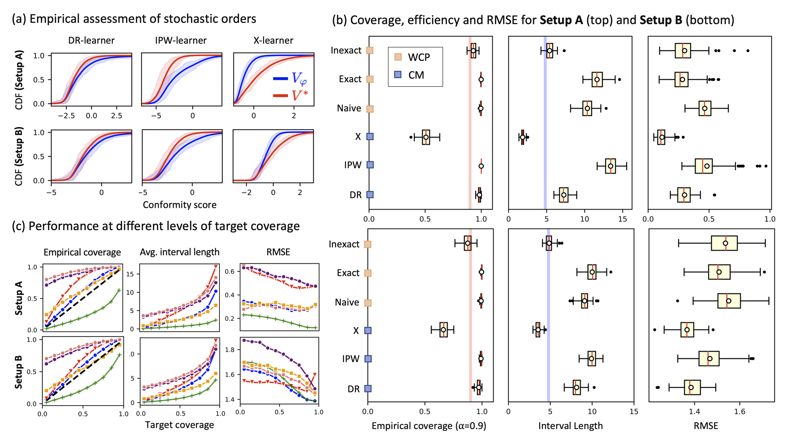
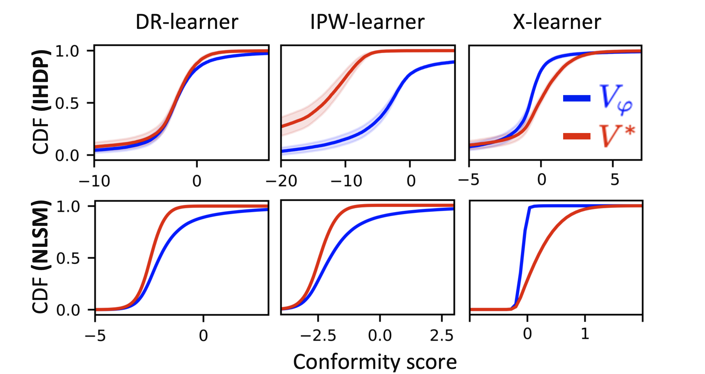
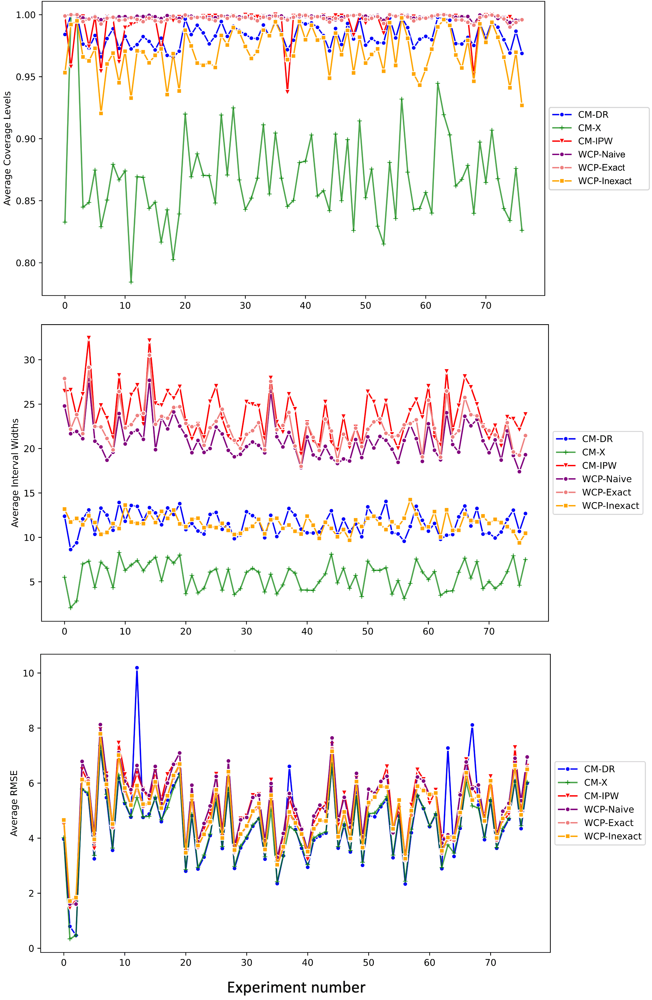

본 포스트는 UC Berkeley · UCSF의 Ahmed M. Alaa, Zaid Ahmad, Mark van der Laan이 발표한 논문 Conformal Meta-learners for Predictive Inference of Individual Treatment Effects (arXiv:2308.14895v1 [cs.LG], 2023년 8월 28일)를 바탕으로, Conformal Prediction과 인과추론의 meta-learner를 처음 접하는 독자도 논리적 흐름을 따라갈 수 있도록 재구성한 것입니다. 본문 1–6절과 부록 A–C(기술적 증명 · 문헌 검토 · 실험 세부사항과 ACIC2016 추가 실험)를 함께 다룹니다.
논문 정보 (Paper Information)
- 제목: Conformal Meta-learners for Predictive Inference of Individual Treatment Effects
- 저자: Ahmed M. Alaa, Zaid Ahmad, Mark van der Laan
- 소속:
- UC Berkeley and UCSF — Ahmed M. Alaa
- UC Berkeley — Zaid Ahmad, Mark van der Laan
- 출처: arXiv:2308.14895v1 [cs.LG], 2023년 8월 28일
- 키워드: 개별 처치 효과(ITE), 조건부 평균 처치 효과(CATE), Conformal Prediction, Meta-learner, Pseudo-outcome 회귀, 확률적 순서(Stochastic Ordering), Monotone Convex Dominance(MCX), DR-learner, Weighted Conformal Prediction
한 줄 요약 (TL;DR)
“CATE meta-learner의 pseudo-outcome 위에 표준 split CP를 그대로 얹어도, 그 Conformity Score가 Oracle 점수를 확률적으로 지배하면 ITE 예측 구간은 유효하며, IPW·DR-learner는 이 조건을 모형·분포와 무관하게 만족한다.”
기존 방법은 Weighted CP로 잠재적 결과라는 Nuisance 모수에 대해 추론한 뒤 두 구간을 결합하므로, CP 절차가 모델 구조에 묶이고 ITE 구간이 보수적이 되기 쉽습니다. 이 논문은 관측 변수만으로 만든 pseudo-outcome을 보류된 보정 집합에서 conformalize하여 목표 모수인 ITE를 직접 추론하는 Conformal Meta-learner를 제안합니다. pseudo-outcome에 대한 커버리지가 곧 ITE 커버리지는 아니므로, 저자들은 pseudo-outcome 점수 \(V_{\varphi}\)가 Oracle 점수 \(V^*\)를 FOSD · SOSD · MCX 중 하나의 의미로 지배하면 충분히 높은 목표 커버리지(\(\alpha < \alpha^*\))에서 유효하다는 Theorem 1과, propensity score가 알려져 있을 때 IPW·DR-learner는 \(V_{\varphi} \succeq_{mcx} V^*\)를 항상 만족하지만 X-learner는 그렇지 않다는 Theorem 2를 증명합니다. 실험에서 IPW·DR-learner는 대부분 더 강한 FOSD(\(\alpha^* = 1\))를 보였고, DR-learner는 유효성을 보장하는 방법 중 대부분의 실험에서 가장 정확하고 효율적이었지만, 점수 분포가 Oracle 분포를 지나치게 강하게 지배한 NLSM에서는 구간이 길어졌습니다.
1. Introduction
- 최근 의료, 정치, 사회과학 등 다양한 분야에서 개별 대상에 대한 처치 효과의 이질성(Heterogeneity in Treatment Effects)을 식별하는 문제는 핵심적인 과제로 떠올랐습니다.
- 단순히 집단 전체의 평균적인 효과를 아는 것을 넘어, “이 약이 특정 환자에게 얼마나 효과가 있을까?”와 같은 질문에 답하기 위해 Machine Learning(ML) 모델을 활용하려는 시도가 늘어나고 있습니다.
- 하지만 기존의 ML 기반 인과추론 모델들은 대부분 조건부 평균 처치 효과(CATE, Conditional Average Treatment Effect)의 점 추정(Point Estimate)에만 집중해 왔습니다. 즉, 주어진 공변량 \(X\)를 가진 개인의 기대 처치 효과를 하나의 숫자로만 예측할 뿐, 그 예측이 얼마나 불확실한지에 대한 정보는 제공하지 못했습니다.
- 이 논문은 이러한 한계를 극복하기 위해, 개별 처치 효과(ITE, Individual Treatment Effect)에 대한 예측 구간(Predictive Intervals)을 생성하는 새로운 프레임워크를 제안합니다.
기존 방법론(Bayesian)의 한계
기존에 ITE의 불확실성을 다루기 위한 시도들은 주로 Bayesian 방법론에 의존해 왔습니다.
대표적으로 BART(Bayesian Additive Regression Trees)나 Gaussian Processes(GPs)가 있습니다.
이들은 사후 분포(Posterior Distribution)를 통해 신용 구간(Credible Interval)을 제공할 수 있다는 장점이 있습니다.
그러나 이러한 Bayesian 접근법은 다음과 같은 명확한 한계가 존재합니다:
- Model-Specific: 특정 모델 구조에 종속적입니다. 최근 Vision이나 NLP 분야에서 두각을 나타내는 Transformer와 같은 현대적인 딥러닝 아키텍처에 유연하게 적용하기 어렵습니다.
- Lack of Frequentist Guarantee: Bayesian 신용 구간의 커버리지(Coverage)는 사전 분포(Prior)에 의존하며, 유한한 샘플(Finite-sample)에서 빈도주의적 커버리지(Frequentist Coverage)를 보장하지 못합니다.
Conformal Prediction (CP)의 도입
- 이러한 배경에서 저자들은 Conformal Prediction (CP)에 주목합니다.
- CP는 어떤 ML 모델이든 상관없이(Model-agnostic), 데이터 분포에 대한 가정 없이(Distribution-free), 유효한 예측 구간을 생성할 수 있는 빈도주의적 대안입니다.
- 하지만 일반적인 회귀(Regression) 문제와 달리, 인과추론 문제에 CP를 적용하는 것은 “인과추론의 근본적인 문제(Fundamental Problem of Causal Inference)” 때문에 훨씬 까다롭습니다.
Core Challenges in Causal Conformal Prediction
- 일반적인 지도 학습(Supervised Learning)에서 우리는 입력 \(X\)와 정답 라벨 \(Y\)를 모두 관측할 수 있습니다.
- 하지만 인과추론에서의 “라벨”은 ITE(Individual Treatment Effect)이며, 이는 관측이 불가능합니다.
\[ \text{ITE}_i = Y_i(1) - Y_i(0) \]
- 여기서 \(Y_i(1)\)은 처치를 받았을 때의 잠재적 결과, \(Y_i(0)\)는 받지 않았을 때의 결과입니다.
- 우리는 현실에서 둘 중 하나만 관측할 수 있습니다(Factual Outcome). 나머지 하나는 영원히 알 수 없는 반사실적 결과(Counterfactual Outcome)입니다.
- 이로 인해 ITE에 대한 예측 구간을 생성할 때 두 가지 주요한 도전 과제가 발생합니다.
Challenge 1: Covariate Shift (공변량 이동)
- 처치 집단과 통제 집단은 무작위로 배정되지 않는 경우가 많습니다.
- 개인의 특성(Covariate)에 따라 처치를 받을 확률이 달라지기 때문에, 처치군과 대조군의 공변량 분포가 서로 다릅니다.
- 결과적으로 모델을 학습시키는 데이터의 분포와 우리가 예측하고자 하는 목표 모집단의 분포가 달라지는 Covariate Shift 문제가 발생합니다.
Challenge 2: Inductive Biases (귀납적 편향)
- ITE는 직접 관측되지 않기 때문에 모델을 ITE에 직접 피팅(Fit)할 수 없습니다.
- 대신 우리는 잠재적 결과 \(Y(1)\), \(Y(0)\)와 처치 확률 같은 Nuisance Parameters(방해 모수)를 중간 단계에서 추정하고 이를 조합해야 합니다.
- 이 과정에서 어떤 방식으로 잠재적 결과를 추정하고 결합하느냐에 따라 모델의 성능이 달라지며, 이를 해결하기 위해 다양한 Meta-learner들이 개발되었습니다.
기존 CATE 추정 문헌과의 관계
- ML 기반 CATE 추정 문헌은 바로 이 두 과제를 다뤄 왔습니다.
- Covariate Shift는 모델의 일반화 성능에 영향을 주며, 기존 CATE 모델들은 중요도 가중(importance weighting, Shimodaira, 2000)이나 비지도 도메인 적응을 위한 균형 표현 학습(balanced representation learning, Shalit et al., 2017; Ganin & Lempitsky, 2015; Johansson et al., 2016)으로 대응했습니다.
- Meta-learner라는 용어는 Künzel et al. (2019)이 inductive bias를 반영하고 nuisance 추정치를 결합하는 여러 모델 비의존적(model-agnostic) 접근을 묘사하기 위해 만들었고, Künzel et al. (2019)과 Kennedy (2020)는 meta-learner의 선택이 CATE 추정 속도(estimation rate)에 영향을 준다는 것을 보였습니다.
- 그러나 두 과제가 CATE 추정기의 일반화 성능에 주는 영향은 깊이 연구된 반면, ITE에 대한 예측 추론 방법의 유효성(validity)과 효율성(efficiency)에 주는 영향은 잘 이해되어 있지 않으며, 이것이 이 논문의 중심 주제입니다.
Proposed Framework: Conformal Meta-learners
- 이 논문의 핵심 기여는 위의 두 가지 문제(Covariate Shift, Inductive Biases)를 동시에 해결하는 Conformal Meta-learners 프레임워크를 제안한 것입니다.
Two-stage Pseudo-outcome Regression
- 저자들은 Two-stage pseudo-outcome regression에 기반한 광범위한 Meta-learner 클래스에 집중합니다.
- 이 방법론은 다음과 같은 2단계로 진행됩니다:
- Pseudo-outcome Estimation: 관측 가능한 변수들만을 사용하여 ITE의 대리 변수(Proxy) 역할을 하는 Pseudo-outcome을 생성합니다.
- Regression: 이 Pseudo-outcome을 공변량 \(X\)에 대해 회귀 분석하여 CATE의 점 추정치를 얻습니다.
Conformal Inference Procedure
Conformal Meta-learner는 이 과정 위에 CP를 적용합니다.
핵심 아이디어는 보류된 보정 데이터셋(Held-out Calibration Set)에서 Pseudo-outcome에 대한 적합성 점수(Conformity Scores)를 계산하고, 이 점수의 경험적 분위수(Empirical Quantile)를 사용하여 구간을 구성하는 것입니다.
이 접근법이 갖는 장점은 다음과 같습니다:
- Covariate Shift 해결: Pseudo-outcome과 연관된 공변량의 분포는 학습 데이터와 테스트 데이터에서 동일하게 취급될 수 있습니다.
- Inductive Biases 해결: 보정 단계(Calibration step)가 모델 아키텍처와 분리되어 있습니다. 따라서 CATE 추정에 효과적이라고 알려진 기존의 다양한 Meta-learner(예: T-learner, X-learner 등)나 딥러닝 아키텍처를 그대로 가져와서 사용할 수 있습니다.
Theoretical Guarantee: Stochastic Ordering
하지만 Pseudo-outcome에 대해 CP를 적용한다고 해서, 그것이 곧바로 관측되지 않은 ITE에 대한 커버리지를 보장하는 것은 아닙니다.
저자들은 이를 증명하기 위해 확률적 순서(Stochastic Ordering) 프레임워크를 도입했습니다.
만약 우리가 사용하는 Pseudo-outcome 기반의 적합성 점수(Conformity Score)가, 실제 ITE를 알았을 때 계산할 수 있는 “Oracle” 적합성 점수보다 확률적으로 우월(Stochastically Dominate)하다면, 결과적으로 생성된 구간은 유효(Valid)합니다.
특히, 널리 사용되는 Doubly-Robust Learner와 같은 Meta-learner들이 이러한 확률적 지배 조건(또는 볼록 지배 조건)을 만족함을 증명했습니다.
수치 실험에서는 pseudo-outcome 변환을 신중하게 고르면, Conformal Meta-learner가 CP의 커버리지 성질과 기반 CATE meta-learner의 효율성 · 점 추정 정확도를 함께 물려받는다는 것을 보입니다.
2. Predictive Inference of Individual Treatment Effects (ITEs)
2.1. Problem Setup
- 논문은 인과추론의 표준인 잠재적 결과 프레임워크(Potential Outcomes Framework), 혹은 Rubin Causal Model을 따릅니다.
Notation & Definition
- 데이터는 \(n\)명의 대상(subject)에 대해 관측되며, 각 대상 \(i\)는 다음과 같은 변수들을 가집니다.
- Covariates (공변량) \(X \in \mathcal{X}\): 개인의 특징.
- Treatment Indicator (처치 여부) \(W \in \{0, 1\}\): \(1\)이면 처치군, \(0\)이면 대조군.
- Outcome (결과) \(Y \in \mathbb{R}\): 우리가 관심 있는 결과 변수.
- 각 대상 \(i\)에 대해 두 가지 잠재적 결과(Potential Outcomes)가 존재합니다.
- \(Y_i(1)\): 처치를 받았을 때의 결과 (\(W=1\))
- \(Y_i(0)\): 처치를 받지 않았을 때의 결과 (\(W=0\))
- 하지만 현실에서는 인과추론의 근본적인 문제(Fundamental Problem of Causal Inference)로 인해, 우리는 오직 실제 발생한 결과(Factual Outcome)만을 관측할 수 있습니다.
\[ Y_i = W_i Y_i(1) + (1 - W_i) Y_i(0) \]
- 반면, 관측되지 않은 쪽인 \(Y_i(1-W_i)\)는 반사실적 결과(Counterfactual Outcome)가 됩니다.
- 우리는 \(n\)명의 대상에 대한 데이터 생성 과정(Data Generation Process)이 결합 분포 \(P\)로부터 독립적이고 동일하게 분포(i.i.d.)한다고 가정합니다.
\[ (X_i, W_i, Y_i(0), Y_i(1)) \overset{iid}{\sim} P(X, W, Y(0), Y(1)), \quad i = 1, \dots, n \tag{1}\]
Assumptions
관측된 데이터 \(\{Z_i = (X_i, W_i, Y_i)\}_{i=1}^n\)로부터 인과 효과를 식별(Identification)하기 위해 다음 세 가지 가정을 도입합니다.
- Unconfoundedness (Ignorability): \[(Y(0), Y(1)) \perp W \mid X\]
- 공변량 \(X\)가 주어졌을 때, 처치 할당 \(W\)는 잠재적 결과들과 독립입니다.
- 즉, \(X\) 외에 처치와 결과 모두에 영향을 주는 숨겨진 교란 변수(Confounder)는 없습니다.
- Consistency: \[Y = Y(W)\]
- 관측된 결과 \(Y\)는 실제로 받은 처치 \(W\)에 해당하는 잠재적 결과와 일치합니다.
- Positivity (Overlap): \[0 < P(W=1 \mid X=x) < 1, \quad \forall x \in \mathcal{X}\]
- 모든 공변량 영역에서 처치군과 대조군이 될 확률이 0이 아니어야 합니다.
CATE vs. ITE: 무엇이 다른가?
이 논문에서 가장 중요하게 강조하는 구분이 바로 CATE와 ITE의 차이입니다.
CATE (Conditional Average Treatment Effect):
- 기존 연구들이 주로 추정해온 결정론적(Deterministic) 함수로, 조건부 기대값의 차이입니다. \[\tau(x) \triangleq \mathbb{E}[Y(1) - Y(0) \mid X=x]\]
ITE (Individual Treatment Effect):
- 이 논문의 관심 대상인 확률 변수(Random Variable)입니다. \[\text{ITE}_i = Y_i(1) - Y_i(0)\]
CATE는 “당신과 같은 특성을 가진 사람들의 평균적인 효과”를 말해주지만, ITE는 “당신이 겪을 실제 효과”를 의미합니다.
ITE는 모델의 오차뿐만 아니라, 같은 \(X\)를 가진 사람들 사이에서도 존재하는 내재적 변동성(Intrinsic Variability)을 포함합니다.
관측된 변수 \(Z=(X, W, Y)\)의 분포는 공변량 분포 \(P_X\)와, 다음과 같은 두 가지 Nuisance Functions(방해 모수 함수)로 결정됩니다.
- Propensity Score \(\pi(x)\): 처치 할당 메커니즘을 나타냅니다.
- Outcome Mean Functions \(\mu_w(x)\): 각 처치 그룹 내에서의 조건부 기대 결과를 나타냅니다.
\[ \begin{aligned} \pi(x) &= \mathbb{P}(W=1 \mid X=x), \\ \mu_w(x) &= \mathbb{E}[Y \mid X=x, W=w], \quad w \in \{0, 1\}. \end{aligned} \tag{2}\]
- 특히 본 논문에서는 데이터가 실험 연구(Experimental Study)에서 얻어졌거나 처치 할당 메커니즘이 알려져 있어, Propensity Score \(\pi(x)\)를 알고 있다(Known)고 가정합니다.
목표: Marginally Valid Predictive Interval
- 논문의 목표는 새로운 데이터 \(X_{n+1}\)이 주어졌을 때, 실제 ITE가 포함될 확률이 \(1-\alpha\) 이상인 예측 구간(Predictive Band) \(\hat{C}(x)\)를 구성하는 것입니다.
\[ \mathbb{P}(Y_{n+1}(1) - Y_{n+1}(0) \in \hat{C}(X_{n+1})) \ge 1 - \alpha \tag{3}\]
- 이 확률은 훈련 데이터 \(\{Z_i\}\)와 새로운 테스트 포인트의 랜덤성을 모두 고려한 Marginal Validity를 의미합니다.
2.2. Conformal Prediction
- 이 목표를 달성하기 위한 도구로 Conformal Prediction (CP)을 사용합니다.
- CP는 모델이나 분포에 대한 가정 없이(Model-free, Distribution-free) 유효한 예측 구간을 생성하는 프레임워크입니다.
Split Conformal Prediction (Inductive CP)
가장 기본적인 형태인 Split CP의 절차는 다음과 같습니다.
- Data Splitting: 전체 데이터 \(\mathcal{D}\)를 훈련 집합 \(\mathcal{D}_{t}\)와 보정 집합(Calibration set) \(\mathcal{D}_{c}\)로 나눕니다.
- Model Fitting: \(\mathcal{D}_{t}\)를 사용하여 예측 모델 \(\hat{\mu}(x)\)를 학습합니다.
- Conformity Scores Calculation: 보정 집합 \(\mathcal{D}_{c}\)의 모든 샘플에 대해, 실제 값과 예측 값의 괴리를 나타내는 점수(Conformity Score)를 계산합니다. \[V_k(\hat{\mu}) \triangleq V(X_k, Y_k; \hat{\mu}), \quad \forall k \in \mathcal{D}_c \tag{4}\]
- 적합성 점수는 예측이 이전 예시들에 비해 얼마나 이례적인지(unusual)를 측정합니다.
- 일반적인 회귀 문제에서는 절대 잔차(Absolute Residual)를 사용합니다. \[V_k(\hat{\mu}) \triangleq | \hat{\mu}(X_k) - Y_k |, \quad \forall k \in \mathcal{D}_c\]
- Quantile Computation: 계산된 모든 점수들의 집합을 \(\mathcal{V}(\hat{\mu}) = \{V_k(\hat{\mu}) : k \in \mathcal{D}_c\}\)라고 할 때, 목표 커버리지 \(1-\alpha\)에 해당하는 경험적 분위수(Empirical Quantile)를 구합니다. \[Q_{\mathcal{V}}(1-\alpha) \triangleq (1-\alpha)(1 + 1/|\mathcal{D}_c|)\text{-th quantile of } \mathcal{V}(\hat{\mu}) \tag{5}\]
- Interval Construction: 새로운 데이터 \(X_{n+1}=x\)에 대한 예측 구간 \(\hat{C}(x)\)는 예측값 \(\hat{\mu}(x)\)를 중심으로 해당 분위수만큼 벌린 구간으로 정의됩니다. \[\hat{C}(x) = [\hat{\mu}(x) - Q_{\mathcal{V}}(1-\alpha), \;\; \hat{\mu}(x) + Q_{\mathcal{V}}(1-\alpha)] \tag{6}\]
이 구간은 보정 데이터와 테스트 데이터 간의 Exchangeability (교환 가능성) 가정 하나만으로, 새로운 데이터 \(Y_{n+1}\)을 포함할 확률이 \(1-\alpha\) 이상임이 수학적으로 보장됩니다 (Marginal Coverage Guarantee).
적응적 구간: Conformalized Quantile Regression (CQR)
- 식 (6)의 구간은 \(x\)와 무관하게 길이가 \(2Q_{\mathcal{V}}(1-\alpha)\)로 고정되어 있습니다.
- 구간 길이가 \(x\)에 따라 달라지는 적응적(adaptive) 구간을 얻기 위해, Romano et al. (2019)는 기반 모델로 구간 값 예측 \([\hat{\mu}_{\alpha/2}(x), \hat{\mu}_{1-\alpha/2}(x)]\)을 내는 분위수 회귀(quantile regression)를 쓰고, 적합성 점수를 다음의 부호 있는 거리(signed distance)로 정의하는 변형을 제안했습니다. \[V_k(\hat{\mu}) \triangleq \max\{\hat{\mu}_{\alpha/2}(X_k) - Y_k, \; Y_k - \hat{\mu}_{1-\alpha/2}(X_k)\}\]
- 이 점수는 \(Y_k\)가 예측 구간 안에 있으면 0 이하, 밖에 있으면 양수가 됩니다. 5절의 모든 실험이 이 CQR로 구간을 만들고, 부록 A.4가 이 점수의 확률적 순서를 따로 분석합니다.
2.3. Oracle Conformal Prediction of ITEs
이제 CP를 ITE 추정에 적용해봅시다. 만약 우리가 신(Oracle)이어서 반사실적 결과까지 모두 볼 수 있다면, 문제는 매우 간단해집니다.
가상의 “Oracle 데이터셋” \({\mathcal{D}}^* = \{(X_i, \underbrace{Y_i(1) - Y_i(0)}_{\text{True ITE}})\}_{i}\) 가 있다고 가정해봅시다.
이 경우 Oracle Conformity Score를 다음과 같이 정의할 수 있습니다. \[V^*_k(\hat{\tau}) \triangleq V(X_k, \underbrace{Y_k(1) - Y_k(0)}_{\text{Label}}; \hat{\tau}), \quad \forall k \in \mathcal{D}^*_c \tag{7}\]
여기서 \(\hat{\tau}\)는 \(\mathcal{D}^*_t\)로 CATE 함수 \(\tau(x)\)를 추정하도록 학습한 ML 모델이고, \(\mathcal{D}^* = \mathcal{D}^*_t \cup \mathcal{D}^*_c\)입니다. 논문은 이 절차를 Oracle Conformal Prediction, \(V^*_k(\hat{\tau})\)를 Oracle Conformity Score라고 부릅니다.
Oracle 문제는 표준 회귀 문제이므로, 이 점수를 사용해 CP를 수행하면 식 (3)의 coverage 조건을 완벽하게 만족하는 구간 \(\hat{C}^*(X)\)를 얻을 수 있습니다.
하지만 현실에서는 \(Y_i(1)\)과 \(Y_i(0)\) 중 하나만 관측되므로, 이 Oracle 절차는 불가능(Infeasible)합니다.
2.4. The Two Challenges of Predictive Inference on ITEs
현실적인 대안으로, 관측된 데이터를 처치군(\(W=1\))과 대조군(\(W=0\))으로 나누어 각각의 잠재적 결과 \(Y(1)\)과 \(Y(0)\)에 대해 별도로 CP를 적용하는 “Naïve Approach”를 생각할 수 있습니다.
데이터 분할(Data Splitting)
- 이 방식은 먼저 데이터를 처치 그룹(\(\mathcal{D}_1\))과 대조 그룹(\(\mathcal{D}_0\))으로 분할합니다.
적합성 점수 계산(Conformity Score Calculation)
- 각각의 Nuisance Estimate (\(\hat{\mu}_1, \hat{\mu}_0\))에 대해 다음과 같이 별도의 적합성 점수를 계산합니다. \[ \begin{aligned} V_k^{(0)}(\hat{\mu}_0) &\triangleq |Y_k(0) - \hat{\mu}_0(X_k)|, \quad \forall k \in \mathcal{D}_{c,0} \\ V_k^{(1)}(\hat{\mu}_1) &\triangleq |Y_k(1) - \hat{\mu}_1(X_k)|, \quad \forall k \in \mathcal{D}_{c,1} \end{aligned} \tag{8}\]
- 여기서 \(\mathcal{D}_{c,0}\)와 \(\mathcal{D}_{c,1}\)은 각각 대조군과 처치군의 보정(Calibration) 데이터셋을 의미합니다.
아래의 개별 구간 생성 · 결합 단계는 이 논문 2.4절 본문에는 없고, 5.1절의 비교 방법인 Naïve WCP(Lei & Candès, 2021)가 두 잠재적 결과 구간을 Bonferroni 보정으로 결합한다는 설명을 풀어 쓴 것입니다.
개별 구간 생성 (Individual Calibration):
- 그 다음, 각 그룹에서 \(1-\alpha/2\) 수준의 분위수(Quantile) \(\hat{q}_0, \hat{q}_1\)를 계산하여 개별 예측 구간 \(\hat{C}_0(X), \hat{C}_1(X)\)를 생성합니다.
- 이때 ITE의 동시 포함 확률(Joint Coverage) \(1-\alpha\)를 보장하기 위해, 본페로니 보정(Bonferroni Correction)을 적용하여 각 구간의 신뢰 수준을 높여야 합니다.
\[ \hat{C}_w(X) = \left[ \hat{\mu}_w(X) - \hat{q}_w, \;\; \hat{\mu}_w(X) + \hat{q}_w \right], \quad w \in \{0, 1\} \]
- 구간 결합 (Interval Combination):
- 최종적으로 ITE \(\tau(X) = Y(1) - Y(0)\)에 대한 예측 구간 \(\hat{C}_{\text{ITE}}(X)\)는 두 구간의 차이(Minkowski difference)로 정의됩니다.
- 즉, \(Y(1)\)이 가질 수 있는 구간에서 \(Y(0)\)가 가질 수 있는 구간을 뺐을 때 나올 수 있는 최소값과 최대값의 범위를 구합니다. \[ \begin{aligned} \hat{C}_{\text{ITE}}(X) &= \hat{C}_1(X) \ominus \hat{C}_0(X) \\ &= \left[ \min(\hat{C}_1) - \max(\hat{C}_0), \;\; \max(\hat{C}_1) - \min(\hat{C}_0) \right] \\ &= \left[ (\hat{\mu}_1(X) - \hat{\mu}_0(X)) - (\hat{q}_1 + \hat{q}_0), \;\; (\hat{\mu}_1(X) - \hat{\mu}_0(X)) + (\hat{q}_1 + \hat{q}_0) \right] \end{aligned} \]
- 이 식을 통해 알 수 있듯, Naïve Approach의 ITE 구간 폭(Width)은 두 개별 구간 폭의 합(\(2\hat{q}_1 + 2\hat{q}_0\))이 되어 불확실성이 단순 합산됩니다.
- 이러한 접근법은 직관적이지만, 실제로는 다음과 같은 두 가지 심각한 문제에 직면합니다.
Challenge 1: Covariate Shift (공변량 이동)
CP의 핵심 가정은 Exchangeability입니다. 즉, 보정 데이터(Calibration data)와 테스트 데이터(Test data)가 같은 분포에서 와야 합니다.
그러나 인과추론 상황에서는 필연적으로 Covariate Shift가 발생합니다. 처치를 받을 확률(Propensity Score, \(\pi(x)\))이 개인마다 다르기 때문입니다.
처치군(\(W=1\))의 공변량 분포 \(P_{X|W=1}\)와 대조군(\(W=0\))의 분포 \(P_{X|W=0}\)는 서로 다릅니다. 무엇보다, 이 둘은 우리가 예측하고자 하는 전체 모집단의 분포 \(P_X\)와도 다릅니다. \[P_{X|W=0} \neq P_{X|W=1} \neq P_X\]
이러한 공변량의 이동은 결과적으로 우리가 계산하는 Conformity Score (\(V\))의 결합 분포에도 영향을 미칩니다. 즉, 특정 처치 그룹에서 계산한 점수의 분포가 전체 모집단에서의 분포와 일치하지 않게 됩니다.
\[ P_{X,V^{(0)}|W=0} \neq P_{X,V^{(0)}}, \quad P_{X,V^{(1)}|W=1} \neq P_{X,V^{(1)}} \]
- 따라서 단순히 처치군 데이터로 학습하고 보정한 모델을 전체 모집단에 적용하면 Exchangeability 가정이 깨지므로, CP의 커버리지 보장(Validity)이 성립하지 않습니다.
Challenge 2: Inductive Biases (귀납적 편향)
- 지도 학습에서는 \((X, Y)\) 쌍을 통해 하나의 함수를 학습하지만, ITE 추정은 관측되지 않는 효과를 추정해야 하므로 모델링의 자유도가 훨씬 높습니다. 이를 위해 다양한 Meta-learner들이 존재합니다.
- T-learner: \(\mu_0(x)\)와 \(\mu_1(x)\)를 별도로 학습하여 \(Y(0), Y(1)\) 각각에 서로 다른 규제(Regularization)를 가함.
- S-learner: 처치 변수 \(W\)를 공변량에 포함시켜 하나의 모델 \(\mu(X, W)\) 학습하고, CATE를 \(\hat{\tau}(x) = \hat{\mu}(x, 1) - \hat{\mu}(x, 0)\)로 추정.
- 각 Meta-learner는 \(Y(0)\)와 \(Y(1)\)이라는 Nuisance Parameters(방해 모수)를 추정하고 결합하는 방식에 있어 서로 다른 Inductive Bias를 가집니다.
- 즉, \(\mu_0\)와 \(\mu_1\)의 결합 모델을 어떻게 고르느냐에 따라 암묵적인 CATE 함수 \(\hat{\tau}(x) = \hat{\mu}_1(x) - \hat{\mu}_0(x)\)에 서로 다른 형태의 규제가 가해지고, 이 편향은 식 (8)의 적합성 점수 분포 \(P_{V^{(0)}}\), \(P_{V^{(1)}}\)에도 영향을 줍니다.
Limitations of Existing Approaches (기존 방법의 한계)
- 기존 연구들은 이러한 Covariate Shift를 해결하기 위해 Conformity Score에 가중치를 부여(Reweighting)하거나, \(Y(0)\)와 \(Y(1)\) 각각에 대한 구간을 구한 뒤 이를 결합하는 방식을 사용했습니다. 하지만 이는 다음과 같은 한계를 가집니다.
- Loss of Post-hoc Nature (사후적 특성 상실): CP 절차가 모델 아키텍처(Nuisance Parameter 추정 방식)에 종속되게 만들어, CP 고유의 장점인 ‘모델에 구애받지 않는(Model-agnostic)’ 성격을 잃게 합니다.
- Conservativeness (보수성): 두 개의 잠재적 결과(PO) 구간을 결합하여 ITE 구간을 생성할 경우, 구간이 불필요하게 넓어져 효율성이 떨어집니다.
- Limited Applicability (적용의 한계): 모든 CATE 모델이 \(Y(0)\)와 \(Y(1)\)을 명시적으로 추정하는 것은 아니므로, 다양한 Inductive Prior를 유연하게 적용하기 어렵습니다.
3. Conformal Meta-learners
- 저자들이 제안한 핵심 솔루션인 Conformal Meta-learners 프레임워크를 자세히 살펴봅니다.
- 이 방법론은 Pseudo-outcome이라는 개념을 도입하여 기존의 CATE 추정 모델들을 Conformal Prediction(CP) 파이프라인에 유연하게 결합합니다.
- 또한, 우리가 만든 구간이 실제 ITE를 포함한다는 것을 보장하기 위해 필요한 수학적 조건인 Stochastic Dominance(확률적 지배) 개념까지 확장해 보겠습니다.
3.1. Pseudo-outcome Regression for CATE Estimation
- Conformal Meta-learner의 핵심 아이디어는 관측되지 않는 ITE(\(Y(1)-Y(0)\))를 직접 예측하려 드는 대신, 관측 가능한 변수들로 구성된 대리 변수, 즉 Pseudo-outcome (\(\tilde{Y}_{\varphi}\))을 정의하는 것입니다.
Two-stage Regression Procedure
이 프레임워크는 크게 두 단계로 구성됩니다.
- Stage 1 (Nuisance Estimation):
- 데이터의 일부(\(\mathcal{D}_{\varphi}\))를 사용하여 Nuisance parameter인 \(\varphi = (\pi, \mu_0, \mu_1)\)를 추정합니다.
- \(\pi(x) = P(W=1|X=x)\): Propensity score (실험 데이터라면 알려져 있음)
- \(\mu_w(x) = \mathbb{E}[Y|X=x, W=w]\): Response surfaces
- 이 논문은 Propensity score가 알려져 있다고 가정하므로, 실제로 추정하는 것은 \(\mu_0\)와 \(\mu_1\)뿐이며 각각 \(\mathcal{D}_0\)와 \(\mathcal{D}_1\)을 사용합니다.
- Stage 2 (CATE Estimation):
- 추정된 Nuisance parameter \(\hat{\varphi}\)를 사용하여 각 관측치에 대해 Pseudo-outcome \(\tilde{Y}_{\varphi}\)를 생성합니다.
- Pseudo-outcome은 어떤 함수 \(f\)에 대해 \(\tilde{Y}_{\varphi} = f(Z, \hat{\varphi})\)로, \(\hat{\varphi}\)와 관측 변수 \(Z = (X, W, Y)\)에만 의존합니다.
- 그 후, 공변량 \(X\)를 입력으로 하고 \(\tilde{Y}_{\varphi}\)를 타겟으로 하는 회귀 모델을 학습하여 CATE(\(\hat{\tau}\))를 추정합니다.
- 이 회귀는 보통 Nuisance 추정에 쓴 것과 다른 데이터셋에서 수행합니다.
\[ \hat{\tau}(x) = \mathbb{E}[\tilde{Y}_{\varphi} \mid X=x] \]
Meta-learners as Pseudo-outcomes
- 흥미로운 점은, 기존에 제안된 유명한 Meta-learner들이 사실 이 Pseudo-outcome Regression의 특수한 형태(Instantiation)로 해석될 수 있다는 것입니다.
- 논문에서는 다음 세 가지 대표적인 Learner들을 재정의합니다.
| Meta-learner | Pseudo-outcome Definition (\(\tilde{Y}_{\varphi}\)) | 설명 |
|---|---|---|
| IPW-learner | \(\displaystyle \frac{W-\pi(X)}{\pi(X)(1-\pi(X))}Y\) | Propensity Score로 가중치를 부여하여 Factual Outcome을 재조정함. 조건부 기댓값이 CATE와 같아지도록 맞춤 (Horvitz & Thompson, 1952). 편향은 적으나 분산이 큼. |
| X-learner | \(\displaystyle W(Y-\hat{\mu}_0(X)) + (1-W)(\hat{\mu}_1(X)-Y)\) | 처치군에서는 관측값에서 \(\hat{\mu}_0\)를 빼고, 대조군에서는 \(\hat{\mu}_1\)에서 관측값을 빼서, 회귀 보정(Regression Adjustment)으로 반사실적 결과를 대체(Imputation)함 (Künzel et al., 2019). |
| DR-learner | \(\displaystyle \frac{W-\pi(X)}{\pi(X)(1-\pi(X))}(Y-\hat{\mu}_W(X)) + \hat{\mu}_1(X) - \hat{\mu}_0(X)\) | IPW와 Regression Adjustment를 결합한 Doubly Robust 형태 (Kennedy, 2020). 모델 설정이 하나라도 맞으면 일치성(Consistency)을 가짐. |
- 이러한 통합된 관점은 우리가 어떤 Meta-learner를 사용하든, 공통된 Conformal Prediction 절차를 적용할 수 있게 해줍니다.
- 논문의 각주에 따르면, 여기서의 X-learner는 Künzel et al. (2019)의 X-learner 중 처치군과 대조군 데이터셋(\(\mathcal{D}_0\), \(\mathcal{D}_1\))에서 따로 학습한 두 회귀 보정 모형 \(\hat{\tau}_0\), \(\hat{\tau}_1\)의 가중합을 쓰는 특수한 경우입니다.
- DR-learner와 X-learner는 \(\hat{\mu}_0\), \(\hat{\mu}_1\)을 함께 모델링하는 특정 아키텍처와 결합되어 기존 연구에서 경쟁력 있는 CATE 추정 성능을 보였습니다 (Künzel et al., 2019; Curth & van der Schaar, 2021; Kennedy, 2020).
- Conformal Meta-learner 프레임워크는 CP 절차(3.2절)를 이 meta-learner들이 담고 있는 inductive prior와 분리하므로, 이들의 좋은 CATE 추정 성질을 물려받고, PO에 대한 추론 대신 ITE를 직접 추론하여 잠재적으로 더 효율적인 구간을 만들 수 있습니다. 이것이 2.4절 Challenge 2에 대한 해답입니다.
3.2. Conformal Pseudo-Intervals for ITEs
- Pseudo-outcome 회귀는 처치 효과의 정확한 대리 변수가 믿을 만한 CATE 점 추정치를 만든다는 생각에 기반합니다. 이 생각을 예측 추론으로 확장하면, 보류된 pseudo-outcome으로 meta-learner를 CP로 보정해 ITE에 대한 정확한 “pseudo-interval”을 얻을 수 있습니다.
- 이제 이 Pseudo-outcome 위에 CP를 얹어 예측 구간(Pseudo-intervals)을 생성하는 전체 알고리즘을 살펴보겠습니다.

Data Splitting Strategy
데이터의 독립성을 보장하기 위해 전체 데이터셋 \(\mathcal{D}\)를 세 개의 상호 배타적인(Mutually Exclusive) 부분집합으로 나눕니다.
- \(\mathcal{D}_{\varphi}\): Nuisance parameter (\(\hat{\pi}, \hat{\mu}_0, \hat{\mu}_1\)) 학습용
- \(\mathcal{D}_{t}\): CATE 모델(\(\hat{\tau}\)) 학습용 (Pseudo-outcome 타겟 회귀)
- \(\mathcal{D}_{c}\): Calibration(보정) 및 Conformity score 계산용
Algorithm Steps (Algorithm 1)

- Estimation: \(\mathcal{D}_{\varphi}\)를 이용해 \(\hat{\varphi} = (\pi, \hat{\mu}_0, \hat{\mu}_1)\)를 추정합니다.
- Transformation: \(\mathcal{D}_{t}\)의 각 데이터에 대해 Pseudo-outcome \(\tilde{Y}_{\varphi}\)를 계산하고, 이를 타겟으로 하는 모델 \(\hat{\tau}(x)\)를 학습합니다.
- Calibration: 보정 데이터셋 \(\mathcal{D}_{c}\)에 대해 Pseudo-outcome 기반의 Conformity Score를 계산합니다. \[ V_{\varphi, k}(\hat{\tau}) \triangleq V(X_k, \tilde{Y}_{\varphi, k}; \hat{\tau}), \quad \forall k \in \mathcal{D}_{c} \tag{9}\]
- Interval Construction: 점수들의 \(1-\alpha\) 분위수(Quantile)인 \(Q_{\mathcal{V}_{\varphi}}(1-\alpha)\)를 구하여, 새로운 데이터 \(X_{n+1}\)에 대한 구간을 반환합니다. \[ \hat{C}_{\varphi}(X_{n+1}) = [\hat{\tau}(X_{n+1}) - Q_{\mathcal{V}_{\varphi}}(1-\alpha), \;\; \hat{\tau}(X_{n+1}) + Q_{\mathcal{V}_{\varphi}}(1-\alpha)] \tag{10}\]
Why this solves the challenges?
- Covariate Shift 해결: \(\hat{\varphi}\)가 주어졌을 때, Pseudo-outcome \(\tilde{Y}_{\varphi}\)는 관측 데이터 \((X, W, Y)\)의 함수이므로, Calibration set과 Test set의 공변량 분포가 동일합니다(Exchangeability 성립).
- Inductive Bias 분리: 어떤 Meta-learner를 쓰든 Pseudo-outcome으로 변환만 하면 되므로, CP 절차는 모델 구조와 무관(Model-agnostic)하게 적용 가능합니다.
4. Validity of Conformal Meta-learners: A Stochastic Ordering Framework
- 정리하면 Conformal Meta-learners의 알고리즘과 Pseudo-outcome(\(\tilde{Y}_{\varphi}\))을 이용해 CATE를 추정하고 예측 구간을 생성하는 과정을 살펴보았습니다.
- 하지만 여기서 우리는 아주 본질적이고 불편한 질문을 마주해야 합니다.
- 우리가 만든 구간은 Pseudo-outcome을 잘 맞추도록 설계되었습니다. 그런데 이 구간이 과연 실제 ITE (Individual Treatment Effect)를 포함한다고 보장할 수 있을까요?
- 아래에서 이 질문에 답하기 위해 저자들이 도입한 Stochastic Ordering (확률적 순서) 프레임워크와, 이를 통해 증명된 Theorem 1 & 2를 검토해 보겠습니다.
The Validity Gap: Exchangeability Breakdown
Conformal Prediction(CP)의 강력함은 Exchangeability(교환 가능성) 가정에서 나옵니다. 하지만 ITE 추정 문제에서는 이 가정이 미묘하게 깨집니다.
우리가 비교해야 할 두 가지 대상은 다음과 같습니다.
- Pseudo-outcome Conformity Score (\(V_{\varphi}\)): 우리가 실제로 계산하는 값. \[V_{\varphi}(\hat{\tau}) = |\hat{\tau}(X) - \tilde{Y}_{\varphi}|\]
- 이는 Nuisance parameter \(\hat{\varphi}\)를 통해 변환된 Pseudo-outcome을 사용합니다.
- Oracle Conformity Score (\(V^*\)): 우리가 알고 싶은 이상적인 값. \[V^*(\hat{\tau}) = |\hat{\tau}(X) - (Y(1) - Y(0))|\]
- 이는 실제 ITE를 사용합니다.
문제점:
- 비록 Pseudo-outcome이 동일한 공변량 분포에서 나왔다 하더라도, \(V_{\varphi}\)와 \(V^*\)는 서로 다른 변수입니다.
- 따라서 \(V_{\varphi}\)에 대해 CP를 적용해 얻은 커버리지 보장(\(1-\alpha\))이 \(V^*\)에 그대로 적용된다는 보장이 없습니다.
저자들은 이 간극을 메우기 위해 “우리의 점수(\(V_{\varphi}\))가 Oracle 점수(\(V^*\))보다 확률적으로 더 크거나 넓게 퍼져 있다면, 구간도 더 넓어질 것이므로 안전하다”라는 논리를 펼칩니다.
- 즉, 어떤 확률적 의미에서 \(Q_{\mathcal{V}_{\varphi}}(\alpha) \ge Q_{\mathcal{V}^*}(\alpha)\)이면 pseudo-interval이 실제 ITE를 덮을 것이라는 직관입니다(Figure 1(b)). 그래서 논문은 \(V_{\varphi}\)와 \(V^*\)의 확률적 순서를 분석해 pseudo-interval이 oracle interval을 덮는 조건을 찾습니다.
Stochastic Ordering Framework
- 확률적 순서(Stochastic Order)는 확률 변수의 위치(location) · 크기(magnitude) · 변동성(variability)을 비교하는 부분 순서(partial order)입니다 (Shaked & Shanthikumar, 2007; Rothschild & Stiglitz, 1978).
- 두 확률 변수의 크기나 변동성을 비교하기 위해 Stochastic Dominance(확률적 지배) 개념을 도입합니다.
- \(F\)와 \(G\)를 각각 두 확률 변수의 누적 분포 함수(CDF)라고 합시다. 기호는 원문을 따라 \(\succeq\)로 씁니다.
Definition 1.1: First-order Stochastic Dominance (FOSD)
\[F \succeq_{(1)} G \iff F(x) \le G(x), \quad \forall x\]
- 단, 적어도 한 점 \(x\)에서는 부등호가 엄격(strict)해야 합니다.
- 의미: \(F\)의 CDF가 \(G\)보다 항상 아래에 있습니다. 이는 \(F\)에서 추출한 샘플이 \(G\)보다 확률적으로 더 큼을 의미합니다.
- 직관: 비감소(non-decreasing) 효용 함수를 가진 모든 의사결정자가 \(G\)보다 \(F\)를 선호하는 상황입니다(Figure 2(a)).
Definition 1.2: Second-order Stochastic Dominance (SOSD)
\[F \succeq_{(2)} G \iff \int_{-\infty}^{x} [G(t) - F(t)] dt \ge 0, \quad \forall x\]
- 단, 적어도 한 점 \(x\)에서는 부등호가 엄격해야 합니다.
- 의미: \(F\)는 위험 회피적(Risk-averse)인 의사결정자, 즉 비감소 오목(concave) 효용 함수를 가진 모든 의사결정자가 \(G\)보다 선호하는 분포입니다(Hadar & Russell, 1969). 밀도로 보면 \(f\)가 \(g\)보다 퍼짐(Spread)이 작습니다.
- 두 CDF는 교차할 수 있지만, 마지막 교차점 이후에는 항상 \(G\)가 아래에 있습니다(Figure 2(b)).
- 따라서 Theorem 1의 조건 (ii) \(V_{\varphi} \preceq_{(2)} V^*\)는 Oracle 점수 \(V^*\)가 \(V_{\varphi}\)를 2차 지배한다는 뜻, 즉 \(V_{\varphi}\)의 퍼짐이 더 크다는 뜻입니다.
Definition 2: Monotone Convex Dominance (MCX)
- 두 확률분포 \(F\)와 \(G\) 사이의 Monotone Convex Dominance (MCX) 관계는 다음과 같이 정의됩니다.
\[F \succeq_{mcx} G \iff \mathbb{E}_{X \sim F}[u(X)] \ge \mathbb{E}_{X \sim G}[u(X)]\]
- 여기서 \(u: \mathbb{R} \to \mathbb{R}\)는 모든 비감소 볼록 함수(non-decreasing convex function)를 의미합니다.
- 의사결정 이론으로 읽으면, \(F\)는 비감소 볼록(convex) 효용 함수를 가진 의사결정자가 선호하는 분포입니다. 이때도 두 CDF는 교차할 수 있지만, 이번에는 마지막 교차점 이후 항상 \(F\)가 아래에 있습니다(부록 A의 Corollary A4).
\(u(X)\)의 역할과 직관적 의미
이 정의에서 \(u(X)\)는 단순한 함수가 아니라, 분포의 성질을 테스트하는 ‘극단값 감지기(Extreme Value Detector)’로 이해해야 합니다.
- “비감소 (Non-decreasing)”의 의미:
- \(u(x)\)는 \(x\)가 커질수록 값도 커집니다.
- 이는 분포가 전체적으로 오른쪽(큰 값)으로 치우쳐 있는지를 검사합니다.
- “볼록 (Convex)”의 의미 (핵심):
- \(u(x)\)는 기울기가 점점 가파라지는 형태(예: \(x^2, e^x\))를 띱니다.
- 이는 평범한 값보다 꼬리 부분의 극단적인 값(Extreme outliers)에 훨씬 더 큰 가중치(Penalty)를 부여함을 뜻합니다.
따라서, 모든 \(u\)에 대해 위 부등식이 성립한다는 것은 다음을 시사합니다:
- “\(F\)는 \(G\)에 비해 ’엄청나게 큰 값’이 튀어나올 확률(Risk)이 더 높다.”
CP에서의 함의: Heavier Tails & Safer Intervals
- 이 수학적 정의는 Conformal Prediction에서 안전 장치가 됩니다.
- 꼬리가 두껍다 (Heavier Tails): \(F\)(Pseudo-outcome 점수)는 \(G\)(실제 ITE 점수)보다 극단적인 오차가 발생할 빈도가 높습니다.
- 분위수가 더 크다: 따라서 두 CDF의 마지막 교차점보다 위쪽 분위수에서는(예를 들어 그 교차점의 CDF 높이가 0.9보다 낮을 때의 상위 10% 지점) \(F\)의 분위수가 \(G\)의 분위수보다 더 멀리(크게) 형성됩니다.
- 결론: 목표 커버리지가 이 교차점의 CDF 높이 이상인 범위에서는, \(F\)를 기준으로 설정한 예측 구간이 실제 분포 \(G\)를 커버하기에 충분히 넓고 보수적(Conservative)입니다. 이 경계 높이가 Theorem 1을 그린 Figure 3의 \(1-\alpha^*\)입니다.

Theorem 1: General Validity Condition
- 이 정의들을 바탕으로 저자들은 Conformal Meta-learner가 유효하기 위한 충분 조건을 제시합니다.
\((X_i, W_i, Y_i(0), Y_i(1))\), \(i = 1, \ldots, n+1\)이 교환 가능(exchangeable)하다고 합시다. 데이터셋 \(\mathcal{D} = \{(X_i, W_i, Y_i)\}_{i=1}^n\)으로 만든 pseudo-interval \(\hat{C}_{\varphi}(X_{n+1})\)에 대해 다음 확률적 순서 조건 중 적어도 하나가 성립하면
- \(V_{\varphi} \succeq_{(1)} V^*\) (FOSD)
- \(V_{\varphi} \preceq_{(2)} V^*\) (SOSD의 역방향 조건, 즉 \(V^*\)가 \(V_{\varphi}\)를 2차 지배)
- \(V_{\varphi} \succeq_{mcx} V^*\) (MCX)
어떤 \(\alpha^* \in (0, 1)\)가 존재하여 다음 커버리지 보장이 성립합니다.
\[\mathbb{P}\big(Y_{n+1}(1) - Y_{n+1}(0) \in \hat{C}_{\varphi}(X_{n+1})\big) \ge 1 - \alpha, \quad \forall \alpha \in (0, \alpha^*)\]
조건 (i)(FOSD)에서는 \(\alpha^* = 1\)입니다.
- 해석:
- 우리가 사용하는 점수 \(V_{\varphi}\)가 Oracle 점수 \(V^*\)보다 더 크거나(FOSD), 더 변동성이 크다면(SOSD · MCX), 우리가 설정한 분위수(Quantile) \(Q_{V_{\varphi}}\)는 Oracle 분위수 \(Q_{V^*}\)보다 크게 됩니다. SOSD · MCX의 경우에는 이것이 \(\alpha < \alpha^*\)인 높은 목표 커버리지에서만 성립합니다.
- 결과적으로 생성된 구간의 폭이 실제 필요한 폭보다 넓어지므로, 보수적인 관점에서 실제 ITE를 안전하게 포함하게 됩니다. 확률적(볼록) 지배는 더 변동이 큰 점수에 관한 조건이므로, Conformal Meta-learner의 구간은 자연히 oracle 구간보다 보수적입니다.
- 실무에서 \(\alpha\)는 보통 0.05나 0.1로 정하므로, 높은 확률의 커버리지라는 이 범위가 실제로 의미 있는 범위입니다.
- 증명은 부록 A.3에서 다룹니다.

Theorem 2: Which Meta-learners are Valid?
- 그렇다면 우리가 앞서 살펴본 3가지 Meta-learner(IPW, X, DR) 중 어떤 것이 이 조건을 만족할까요? 이것이 논문의 핵심 발견입니다.
- 어떤 meta-learner가 Theorem 1의 조건 (i)–(iii)을 만족하는지는 pseudo-outcome \(\tilde{Y}_{\varphi} = f(Z; \hat{\varphi})\)를 어떻게 만드느냐에 달려 있습니다.
적합성 점수가 절대 잔차 \(V_{\varphi}(\hat{\tau}) = |\hat{\tau}(X) - \tilde{Y}_{\varphi}|\)이고, Propensity score 함수 \(\pi: \mathcal{X} \to [0, 1]\)가 알려져 있다고 가정합니다. 그러면 다음이 성립합니다.
- X-learner: \(V_{\varphi}\)와 \(V^*\) 사이에 모델이나 분포와 무관한(Model-free distribution-free) 확률적 순서가 존재하지 않는다.
- IPW-learner & DR-learner: 임의의 분포 \(P(X, W, Y(0), Y(1))\), CATE 추정치 \(\hat{\tau}\), Nuisance 추정치 \(\hat{\varphi}\)에 대해 \(V_{\varphi} \succeq_{mcx} V^*\)를 만족한다. 즉, Monotone Convex Dominance를 만족하여 유효성을 보장한다.
- 즉, \(V_{\varphi}\)와 \(V^*\)의 확률적 순서는 적합성 점수 함수 \(V(X, \tilde{Y}_{\varphi}; \hat{\tau})\)와 meta-learner(pseudo-outcome 생성 함수 \(f\))의 선택에 함께 달려 있습니다. 증명은 부록 A.4에서 다룹니다.
Why IPW & DR satisfy MCX?
- IPW와 DR-learner가 MCX(\(\succeq_{mcx}\)) 조건을 만족하여 유효한 예측 구간을 생성할 수 있는 핵심 이유는 이들이 생성하는 Pseudo-outcome의 통계적 성질에 있습니다.
1. 구조적 비편향성 (Structural Unbiasedness)
- 이 두 모델의 가장 강력한 특징은 Nuisance parameter(\(\hat{\mu}\))의 추정이 불안정하더라도, Propensity Score가 정확하다면 Pseudo-outcome \(\tilde{Y}_{\varphi}\)가 CATE에 대해 비편향(Unbiased)이라는 점입니다.
\[\mathbb{E}[\tilde{Y}_{\varphi} \mid X=x] = \tau(x)\]
- 즉, \(\tilde{Y}_{\varphi}\)는 실제 효과 \(\tau(x)\)를 중심으로 하는 분포를 가집니다. 이를 수식으로 분해하면 다음과 같습니다.
\[ \tilde{Y}_{\varphi} = \tau(x) + \varepsilon, \quad \text{where } \mathbb{E}[\varepsilon \mid X] = 0 \]
- 여기서 \(\varepsilon\)은 Propensity weighting(\(1/\pi\))에 의해 증폭된 노이즈입니다.
- 이 구성 덕분에 IPW·DR-learner는 데이터 분포와 \(\hat{\mu}_0\), \(\hat{\mu}_1\)을 추정한 ML 모델에 관계없이 평균 처치 효과(ATE)의 비편향 추정치를 줍니다. 같은 논리로, 이들은 데이터 분포와 모델 선택에 관계없이 적합성 점수의 확률적(볼록) 지배도 보장하며, 그래서 CP 커버리지 보장의 모형 · 분포 무관(model- and distribution-free) 성질이 보존됩니다.
2. 혼합과 볼록 결합의 비교 (Mixture vs. Convex Combination)
- 논문의 실제 증명(부록 A.4)은 비편향성만으로 끝나지 않고, 같은 두 확률 변수를 두 가지 방식으로 섞는 구조를 이용합니다.
- \(X = x\)에서 IPW·DR-learner의 적합성 점수는, 처치 여부 \(W \sim \text{Bernoulli}(\pi(x))\)에 따라 두 값 중 하나를 고르는 혼합(mixture)으로 쓸 수 있습니다(\(Y_{\pi}\), \(Y_{1-\pi}\)의 정의는 부록 A.4의 식 (A.25)). \[V_{\varphi}(x) = W\,|\hat{\tau}(x) - Y_{\pi}(x)| + (1 - W)\,|\hat{\tau}(x) - Y_{1-\pi}(x)|\]
- 반면 두 변수의 \(\pi(x)\)-가중 평균은 정확히 ITE가 되므로(\(\pi(x) Y_{\pi}(x) + (1-\pi(x)) Y_{1-\pi}(x) = Y(1) - Y(0)\)), Oracle 점수는 같은 두 변수의 볼록 결합(convex combination)의 절댓값입니다. \[V^*(x) = \big|\pi(x)(\hat{\tau}(x) - Y_{\pi}(x)) + (1 - \pi(x))(\hat{\tau}(x) - Y_{1-\pi}(x))\big|\]
- \(A = \hat{\tau}(x) - Y_{\pi}(x)\), \(B = \hat{\tau}(x) - Y_{1-\pi}(x)\), \(\pi = \pi(x)\)라 두면, 비감소 볼록 함수 \(u\)에 대해 혼합의 기댓값 \(\pi\,\mathbb{E}[u(|A|)] + (1-\pi)\,\mathbb{E}[u(|B|)]\)는 볼록성에 의해 \(\mathbb{E}[u(\pi|A| + (1-\pi)|B|)]\) 이상이고, 삼각부등식과 \(u\)의 단조성에 의해 다시 \(\mathbb{E}[u(|\pi A + (1-\pi) B|)] = \mathbb{E}[u(V^*(x))]\) 이상입니다(Lemma A2).
- 따라서 각 \(x\)에서 \(V_{\varphi}(x) \succeq_{mcx} V^*(x)\)이고, 이를 \(X\)에 대해 적분하면(Lemma A1) \(V_{\varphi} \succeq_{mcx} V^*\)가 됩니다. 이 논증은 \(\hat{\tau}\), \(\hat{\mu}_0\), \(\hat{\mu}_1\)과 데이터 분포에 아무 조건도 두지 않습니다.
Why X-learner fails?
- 반면 X-learner의 Pseudo-outcome은 다음과 같습니다. \[\tilde{Y}_{\varphi} = W(Y-\hat{\mu}_0) + (1-W)(\hat{\mu}_1-Y)\]
- 이 식은 \(\hat{\mu}_0, \hat{\mu}_1\) 추정이 완벽하지 않다면 \(\mathbb{E}[\tilde{Y}_{\varphi}|X] \neq \tau(x)\)일 수 있습니다.
- 또한 Propensity score를 이용해 이 오차를 보정하는 구조가 아니기 때문에, 분포에 따라 \(V_{\varphi}\)가 \(V^*\)보다 작아질 위험(Under-coverage)이 존재합니다.
- 논문의 표현으로는, X-learner는 pseudo-outcome을 만들 때 \(\pi\)에 대한 지식을 쓰지 않으므로 분포 무관한 확률적 순서를 보장하지 못하고, 달성되는 커버리지가 \(\hat{\mu}_0\), \(\hat{\mu}_1\)에 좌우됩니다. 부록 A.4는 FOSD · MCX · 역방향 SOSD가 각각 깨지는 반례를 구체적으로 구성합니다.
Table 2: 적합성 점수별 확률적 순서
- 논문의 Table 2는 meta-learner와 적합성 점수의 조합별로 얻어지는 확률적 순서를 정리합니다.
| Meta-learner | Conformity Score Order (절대 잔차) | Validity Guarantee | 부호 있는 거리 (Signed distance) |
|---|---|---|---|
| X-learner | No stochastic order | ❌ Not Guaranteed | No stochastic order |
| IPW-learner | \(V_{\varphi} \succeq_{mcx} V^*\) | ✅ Valid | \(V_{\varphi} \preceq_{(2)} V^*\) |
| DR-learner | \(V_{\varphi} \succeq_{mcx} V^*\) | ✅ Valid | \(V_{\varphi} \preceq_{(2)} V^*\) |
- 원문 Table 2는 절대 잔차와 부호 있는 거리 두 열로 이루어져 있고, Validity Guarantee 열은 절대 잔차 점수에 Theorem 1을 적용한 결과를 덧붙인 것입니다.
- 부호 있는 거리 점수(Linusson et al., 2014)는 \(V_{\varphi} \preceq_{(2)} V^*\)를 만족하지만, 이 점수로 만든 구간은 식 (5)의 구성을 따르지 않아 Theorem 1이 적용되지 않습니다. 반면 5절 실험이 사용하는 CQR 점수(Romano et al., 2019)는 IPW·DR-learner에서 \(V_{\varphi} \succeq_{mcx} V^*\)를 만족하여 Theorem 1이 적용됩니다(부록 A.4).
Limitations and Discussion
- 이 이론은 강력하지만, 저자들은 두 가지 현실적인 한계를 솔직하게 인정합니다.
Limitation 1: Known Propensity Score Assumption
- Theorem 2의 보장은 Propensity score \(\pi(x)\)를 정확히 알고 있다는 가정하에 성립합니다.
- RCT(무작위 대조 실험) 데이터라면 \(\pi(x)\)가 설계에 의해 주어지므로 문제가 없습니다.
- 하지만 관측 데이터(Observational Data)라면 \(\pi(x)\)를 추정해야 하며, 추정 오차가 발생할 경우 이론적 보장이 약화될 수 있습니다. (다만 이는 Weighted CP 등 다른 방법론들도 공유하는 문제입니다)
Limitation 2: Unknown \(\alpha^*\)
- Theorem 1은 “특정 \(\alpha^*\) 이하의 \(\alpha\)에 대해 유효하다”라고 말합니다.
- 하지만 이 임계값 \(\alpha^*\)가 정확히 얼마인지는 데이터 분포에 따라 다르며 사전에 알기 어렵습니다. 첫 번째 한계와 달리, 이 한계는 이 방법에만 있는 고유한 한계입니다.
- 저자들은 관측 변수로부터 \(\alpha^*\)를 추론하는 절차나 \(\alpha^*\)의 이론적 상한을 유도하는 것을 Future Work로 남겨두고, 이 논문에서는 준합성 실험에서 \(\alpha^*\)를 경험적으로 평가하는 데 집중합니다.
- 기존 연구와의 자세한 비교는 부록 B에 있습니다.
5. Experiments
앞의 3 · 4절에서는 Conformal Meta-learners의 이론적 배경과 Stochastic Ordering을 통한 유효성 증명을 살펴보았습니다.
이론적으로 IPW-learner와 DR-learner는 유효함이 증명되었고, X-learner는 보장할 수 없다는 결론을 얻었습니다.
이 절에서는 이러한 이론적 결과가 실제 데이터(Synthetic & Semi-synthetic) 실험에서도 나타나는지 확인하고, 경쟁 모델(Baselines)과 비교하여 어떤 성능 차이를 보이는지 분석합니다.
5.1. Experimental Setup
- 인과추론 실험의 가장 큰 어려움은 Ground Truth (실제 ITE)를 관측할 수 없다는 점입니다.
- 따라서 저자들은 실제 공변량을 사용하되 결과값은 시뮬레이션하는 방식 등을 도입했습니다.
- 흔히 쓰이는 관행대로 합성(synthetic) 데이터와 준합성(semi-synthetic) 데이터로 실험하며 (Lei & Candès, 2021; Hill, 2011; Johansson et al., 2016), 추가 결과는 부록 C에 있습니다.
Datasets
실험은 크게 두 가지 환경에서 진행되었습니다.
- Synthetic Datasets (완전 합성 데이터):
- 공변량 \(X\)와 처치 \(W\)를 모두 생성. Lei & Candès (2021) 3.6절의 데이터 생성 과정(원래 Wager & Athey (2018)가 제안)을 변형한 것입니다.
- 공변량은 \(X \sim U([0,1]^d)\), 처치는 \(W \mid X = x \sim \text{Bern}(\pi(x))\)로 뽑고, propensity score는 \(\pi(x) = (1 + I_x(2, 4))/4\)입니다. 여기서 \(I_x(2, 4)\)는 정규화된 불완전 베타 함수(regularized incomplete beta function), 즉 형상 모수가 2와 4인 베타 분포의 CDF입니다.
- 결과 평균 함수는 다음과 같으며, \(\gamma \in [0, 1]\)은 처치 효과의 크기를 조절하는 모수입니다. \[ \begin{gathered} \mu_1(x) = \zeta(x_1)\,\zeta(x_2), \qquad \mu_0(x) = \gamma\,\zeta(x_1)\,\zeta(x_2), \\ \zeta(x) = \frac{1}{1 + \exp(-12(x - 0.5))} \end{gathered} \]
- 잠재적 결과는 \(Y(w) \mid X = x \sim \mathcal{N}(\mu_w(x), \sigma^2(x))\), \(w \in \{0, 1\}\)에서 뽑습니다.
- Heteroscedastic Noise Model: 오차의 분산이 공변량에 따라 달라지는 \(\sigma^2(x) = -\log(x_1)\) 모델을 사용하여 불확실성 추정의 난이도를 높였습니다.
- Setup A: 처치 효과가 없는 경우 (\(\gamma=1\), 이때 \(\mu_0 = \mu_1\)).
- Setup B: 이질적 처치 효과(Heterogeneous effects)가 존재하는 경우 (\(\gamma=0\), 이때 \(\tau(x) = \zeta(x_1)\zeta(x_2)\)).
- 원문은 두 Setup을 \(\zeta = 1\), \(\zeta = 0\)으로 적었지만, \(\zeta\)는 위의 함수이고 처치 효과를 조절하는 모수는 \(\gamma\)이므로 \(\gamma\)의 오기로 보고 \(\gamma\)로 적었습니다.
- Semi-synthetic Datasets (준합성 데이터):
- IHDP: 영유아 건강 발달 프로그램(Infant Health and Development Program) 데이터. Hill (2011)이 처음 만든 벤치마크입니다.
- NLSM: 국립 학습 사고 방식 연구(National Study of Learning Mindsets) 데이터 (Yeager et al., 2019). 데이터 생성 과정은 Carvalho et al. (2019)의 2절을 따릅니다.
- 실제 공변량을 사용하되, 결과 변수(Outcome)는 시뮬레이션하여 \(Y(1)\)과 \(Y(0)\)를 모두 알 수 있게 설정했습니다. 다만 부록 C.2에 따르면 NLSM 벤치마크는 실제 공변량 대신 NLSM을 흉내 낸 합성 공변량을 씁니다.
- 두 데이터셋의 자세한 설명은 부록 C.2에 있습니다.
Baselines (비교 모델)
Conformal Meta-learner(CM)와 비교할 대상은 Weighted Conformal Prediction (WCP) 계열의 방법론들입니다.
Naïve WCP: \(Y(0)\)와 \(Y(1)\) 각각에 대해 구간을 구한 뒤, Bonferroni correction을 이용해 결합합니다. (보수적임)
Exact Nested WCP: ITE의 Plug-in 추정치에 대해 WCP를 적용하고, 2차 CP 절차를 수행합니다. (유효성 보장됨)
Inexact Nested WCP: Exact 방식에서 2차 CP 대신 Quantile Regression을 사용합니다. (유효성 보장 안 됨)
CM Variants: 본 논문의 제안 방법론 (CM-IPW, CM-DR, CM-X).
모든 모델은 기본 예측기(Base Learner)로 Gradient Boosting을 사용했습니다. Nuisance 모델링과 pseudo-outcome 모델링에 같은 모델을 씁니다.
예측 구간은 모든 방법에서 Romano et al. (2019)의 Conformalized Quantile Regression (CQR)으로 구성했습니다. 5.2절 그림들의 적합성 점수 축에 음수 값이 나타나는 것도 절댓값이 아닌 이 부호 있는 점수를 썼기 때문으로 보입니다(2.2절 참고).
5.2. Results and Discussion
- 실험 결과의 핵심은 세 가지입니다.
- IPW·DR-learner는 대부분의 실험에서 Theorem 2가 보장하는 MCX를 넘어 견고한 FOSD(\(\alpha^* = 1\))를 보입니다.
- DR-learner는 유효한 추론을 보장하는 다른 모든 방법과 비교해, 대부분의 실험에서 더 나은 점 추정 정확도와 구간 효율성을 보입니다.
- Conformal Meta-learner의 효과는 적합성 점수와 Oracle 점수의 CDF 차이에 달려 있습니다. 적합성 점수의 꼬리를 더 두껍게 만드는 pseudo-outcome 변환은 성능을 떨어뜨릴 수 있습니다.
Key Result 1: Empirical Stochastic Orders
가장 먼저 확인해야 할 것은 Theorem 1 & 2의 이론적 예측이 실제 데이터 분포에서 성립하는지 여부입니다.
우리는 Pseudo-outcome Conformity Score (\(V_{\varphi}\))의 누적 분포 함수(CDF)가 Oracle Score (\(V^*\))의 CDF보다 아래에 위치(FOSD)하거나, 더 완만하게 증가(MCX)하기를 기대합니다.
Figure 4(a)는 세 meta-learner(DR, IPW, X)의 \(V_{\varphi}\)와 \(V^*\)의 경험적 CDF를 Setup A와 B에서 각각 100회 실행한 평균으로 보여 줍니다. 음영은 전체 실행에서 경험적 CDF의 최저 · 최고 경계입니다.

분석 결과
- IPW & DR-learner:
- 그래프 (a)에서 파란색 선(\(V_{\varphi}\))이 빨간색 선(\(V^*\))보다, 평균 CDF 기준으로 그리고 거의 모든 실행에서 우측 하단에 위치합니다.
- 이는 First-Order Stochastic Dominance (FOSD)를 만족함을 보여줍니다. Theorem 2와 부합하면서, 실제로 달성된 지배 조건이 이론적 보장보다도 강하다는 뜻입니다.
- FOSD는 이론적으로 요구되었던 MCX보다 훨씬 강력한 조건입니다(FOSD는 MCX를 함의). 즉, 이 모델들은 매우 안정적으로 유효한 구간을 생성합니다.
- X-learner:
- 반대로 파란색 선이 빨간색 선보다 좌측 상단에 위치합니다. 즉 X-learner의 적합성 점수는 FOSD의 의미로 Oracle 점수에 지배되며, X-learner가 분포 무관 확률적 순서를 보장하지 않는다는 Theorem 2에 비추어 보면 놀랍지 않은 결과입니다.
- 이는 Pseudo-score가 실제 오차보다 과소평가됨을 의미하며, Under-coverage(커버리지 미달)로 이어질 것임을 예고합니다.
- 이러한 관찰은 준합성 데이터(Figure 5)에서도 그대로 재현됩니다.
- Theorem 1에 따르면 이 경험적 순서는 IPW·DR-learner는 ITE를 덮고 X-learner는 덮지 못할 것이라고 예측하며, 이는 Figure 4(b), 4(c)와 Table 3에서 확인됩니다.
- IPW·DR-learner가 더 강한 FOSD를 만족한다는 것은 이들의 유효 범위가 모든 커버리지 수준에 걸친다는 뜻이며(Figure 3에서 \(\alpha^* = 1\)), IPW·DR-learner가 FOSD를 달성하는 조건을 밝히는 더 강한 버전의 Theorem 2가 가능할 수 있음을 시사합니다.
Key Result 2: Performance Comparison
- 이제 실제 커버리지(Coverage), 구간 길이(Efficiency), 정확도(RMSE) 측면에서 성능을 비교해봅시다. 세 지표는 각각 실제 ITE에 대한 달성 커버리지, 예측 구간의 기대 길이, CATE 추정치의 평균제곱근오차(RMSE)입니다.

Table 3: 준합성 데이터에서의 성능
- 원문 Table 3을 옮긴 것입니다. 굵은 글씨는 원문에서 최고 성능으로 표시된 값이고, 원문에서 회색으로 표시된 값은 기울임꼴로 옮겼습니다(모두 목표 0.9에 크게 못 미치는 커버리지입니다).
| 방법 | IHDP Coverage | IHDP Avg. len. | IHDP RMSE | NLSM Coverage | NLSM Avg. len. | NLSM RMSE |
|---|---|---|---|---|---|---|
| WCP-Naïve | 0.89 (0.02) | 18.9 (4.04) | 4.73 (1.00) | 0.99 (0.00) | 4.82 (0.02) | 0.15 (0.00) |
| WCP-Exact | 0.99 (0.00) | 29.8 (7.60) | 4.50 (0.97) | 0.99 (0.00) | 4.92 (0.07) | 0.19 (0.01) |
| WCP-Inexact | 0.61 (0.04) | 8.49 (1.36) | 4.61 (0.99) | 0.96 (0.00) | 2.38 (0.01) | 0.18 (0.00) |
| CM-X | 0.65 (0.04) | 11.0 (3.04) | 3.34 (0.56) | 0.27 (0.00) | 0.38 (0.00) | 0.14 (0.00) |
| CM-IPW | 0.99 (0.00) | 112 (23.0) | 19.9 (3.44) | 0.99 (0.00) | 6.48 (0.07) | 0.61 (0.02) |
| CM-DR | 0.96 (0.01) | 16.7 (3.30) | 3.32 (0.53) | 0.99 (0.00) | 6.24 (0.07) | 0.37 (0.01) |
Coverage (유효성)
- CM-DR, CM-IPW: 목표 수준인 90% (\(1-\alpha=0.9\))를 안정적으로 달성하거나 상회했습니다.
- CM-X: 예상대로 모든 실험에서 목표 커버리지에 도달하지 못했습니다 (Under-coverage).
- Baselines: Naïve와 Exact WCP는 유효했으나, Inexact WCP는 커버리지를 보장하지 못했습니다. Inexact WCP는 합성 실험에서는 경쟁력 있는 효율성과 보정을 보였지만 IHDP에서는 커버리지가 0.61에 그쳤습니다.
Efficiency (구간 길이) & RMSE
- CM-DR (Winner): 합성 실험(Figure 4(b))에서 DR-learner는 유효한 WCP(Naïve, Exact)보다 짧은 구간과 낮은 RMSE를 기록하면서 목표 커버리지 90%를 달성했고, IHDP에서는 모든 방법 중 가장 낮은 RMSE(3.32)와, 목표 커버리지를 달성한 방법 중 가장 짧은 구간(16.7)을 기록했습니다(원문은 IHDP에서 DR-learner가 RMSE와 구간 효율성 모두에서 비교 방법들을 앞섰다고 요약합니다). 즉, “정답을 포함하면서도 가장 타이트한 구간”을 제공했습니다. 다만 아래와 같이 NLSM은 예외입니다.
- Naïve WCP: 유효하지만 구간이 너무 넓어 실용성이 떨어집니다.
- CM-X: 합성 실험에서 RMSE는 모든 방법 중 가장 낮았으나(점 추정은 정확함), 구간 추정이 틀렸기 때문에 신뢰할 수 없습니다.
- Inexact WCP: 커버리지 보장이 없을 뿐 아니라, 서로 다른 inductive bias(Setup A의 효과 없음, Setup B의 이질적 효과) 사이에서 RMSE 성능이 일관되지 않습니다.
- 이러한 성능 경향은 Figure 4(c)에서 보듯 모든 목표 커버리지 수준에서 유지됩니다.
Why is DR better than IPW?
- CM-IPW와 CM-DR 모두 유효하지만, CM-DR의 구간이 더 좁고 효율적입니다. 그 이유는 CDF의 차이(Gap)에 있습니다.
- IPW의 Pseudo-outcome은 분산이 매우 큽니다. 이로 인해 Conformity score가 지나치게 커져, Oracle score와의 격차(Gap)가 벌어집니다.
- 논문의 설명으로는, pseudo-outcome 변환이 회귀 타깃에 큰 변동성을 만들면 적합성 점수의 CDF가 더 낮아지고, pseudo-outcome 회귀의 정확도가 떨어지며, 예측 구간이 길어집니다. IHDP에서 IPW-learner의 평균 구간 길이 112, RMSE 19.9가 이 경우입니다.
- 반면, DR-learner는 Oracle CDF에 더 가까운 근사를 제공합니다. 결과적으로 \(V_{\varphi}\)의 분포가 \(V^*\)의 분포에 더 가깝게 밀착(Tight bound)되어, 불필요하게 넓은 구간을 만들지 않으며, 이 때문에 IPW-learner보다 일관되게 좋은 성능을 냅니다.
- 같은 논리로 DR-learner도 적합성 점수가 Oracle 점수를 “매우 강하게” 지배하면 성능이 나빠집니다. NLSM(Figure 5 아래 행)이 그런 경우이며, Table 3에서 DR-learner의 NLSM 구간 길이(6.24)는 Naïve WCP(4.82)보다 길고 RMSE(0.37)도 X-learner(0.14)보다 큽니다. 반대로 적합성 점수의 CDF가 Oracle CDF의 더 가까운 하한일 때(Figure 4, Figure 5 위 행) DR-learner는 경쟁력이 있습니다.
- 저자들은 pseudo-outcome과 Oracle 점수 CDF 사이의 격차를 분석하고, 확률적 순서를 보존하면서 효율을 최적화하는 pseudo-outcome 변환을 설계하는 것을 향후 과제로 제시합니다.
6. Conclusions
- 이 논문(Conformal Meta-learners for Predictive Inference of Individual Treatment Effects)은 인과추론의 난제인 ITE 구간 추정 문제를 해결하기 위해, Conformal Prediction과 Meta-learner를 결합한 새로운 프레임워크를 제안했습니다.
- 인과 효과는 직접 관측되지 않기 때문에 처치 효과의 추정과 추론은 어렵습니다. 제안된 프레임워크는 어떤 ML 모델과도 함께 쓸 수 있으며, CP의 모형 · 분포 무관 유효성과 모델 비의존적 meta-learner의 추정 정확도를 함께 물려받습니다.
- 저자들은 확률적 순서에 기반한 이론 틀이 정확한 추정과 유효한 추론을 함께 최적화하는 새 모델 개발의 길잡이가 될 수 있다고 봅니다.
핵심 요약
- Framework: Pseudo-outcome을 정의하여 CATE 추정 문제를 회귀 문제로 변환하고, 그 위에 CP를 적용하여 모델에 구애받지 않는(Model-agnostic) 구간 추정 방법을 제시했습니다.
- Theory: Pseudo-score와 Oracle-score 간의 Stochastic Ordering (확률적 순서) 조건을 정립하여, 어떤 상황에서 구간이 유효한지 수학적으로 증명했습니다.
- Findings:
- DR-learner와 IPW-learner는 이론적/실험적으로 유효성(Validity)이 보장됩니다.
- 특히 DR-learner는 대부분의 실험에서 유효한 방법 중 가장 효율적인(좁은) 구간을 제공하여 실용적으로 가장 우수합니다. 다만 적합성 점수가 Oracle 점수를 지나치게 강하게 지배한 NLSM은 예외입니다.
- X-learner는 점 추정 성능은 좋으나, 불확실성 추정에는 적합하지 않을 수 있습니다.
Future Work
- IPW·DR-learner가 FOSD를 달성하는 조건을 밝히는, 더 강한 버전의 Theorem 2.
- 관측 변수로부터 \(\alpha^*\)를 추론하는 절차나 \(\alpha^*\)의 이론적 상한 유도.
- Stochastic order를 유지하면서도 효율성을 극대화하는 새로운 Pseudo-outcome 변환법 연구.
부록 A. 기술적 증명 (Appendix A: Technical Proofs)
- 이 부록은 4절의 Theorem 1 · 2를 증명합니다. 먼저 확률적 순서의 동치 정의(A.1)와 보조정리(A.2)를 준비한 뒤, Theorem 1(A.3)과 Theorem 2(A.4)를 차례로 증명합니다.
A.1. 확률적 순서의 동치 정의 (Equivalent Definitions for Stochastic Orders)
- 4절 Definition 1은 CDF로 FOSD · SOSD를 정의했습니다. 여기서는 같은 개념을 기대 효용(expected utility)의 언어로 다시 씁니다. 이 정의들은 Definition 1과 동치이며, Theorem 2의 증명(A.4)에서 쓰입니다.
- Definition A1 (FOSD). \(F \succeq_{(1)} G\)일 필요충분조건은 모든 비감소 (효용) 함수 \(u: \mathbb{R} \to \mathbb{R}\)에 대해 \(\mathbb{E}_{X \sim F}[u(X)] \ge \mathbb{E}_{X \sim G}[u(X)]\)인 것입니다. Definition 1과의 동치는 Shaked & Shanthikumar (2007)의 Theorem 1.A.3이 증명합니다.
- Definition A2 (SOSD). \(F \succeq_{(2)} G\)일 필요충분조건은 모든 비감소 오목 함수 \(u: \mathbb{R} \to \mathbb{R}\)에 대해 \(\mathbb{E}_{X \sim F}[u(X)] \ge \mathbb{E}_{X \sim G}[u(X)]\)인 것입니다(같은 책 Theorem 4.A.1과 식 (4.A.7)).
- Definition A3 (Statewise Stochastic Dominance, SWD). 확률 변수 \(X\)가 \(Y\)를 상태별로 지배한다(\(X \succeq_{\text{SWD}} Y\))는 것은 이변량 확률 변수 \((X, Y) \sim P_{X,Y}\)의 모든 실현에서 \(X \ge Y\)라는 뜻입니다. SWD는 FOSD를 함의합니다.
- Definition A4 (Convex Dominance, CX). \(F \succeq_{cx} G\)일 필요충분조건은 모든 볼록 함수 \(u: \mathbb{R} \to \mathbb{R}\)에 대해 \(\mathbb{E}_{X \sim F}[u(X)] \ge \mathbb{E}_{X \sim G}[u(X)]\)인 것입니다.
- 이렇게 쓰면 각 순서는 부등식이 성립해야 하는 효용 함수 \(u\)의 범위로만 구별됩니다.
| 순서 | 부등식이 성립해야 하는 \(u\)의 범위 | 의사결정 해석 (4절) |
|---|---|---|
| FOSD \(\succeq_{(1)}\) | 모든 비감소 함수 | 비감소 효용을 가진 모든 의사결정자가 선호 |
| SOSD \(\succeq_{(2)}\) | 모든 비감소 오목 함수 | 위험 회피적 의사결정자가 선호 (퍼짐이 작음) |
| MCX \(\succeq_{mcx}\) | 모든 비감소 볼록 함수 | 비감소 볼록 효용을 가진 의사결정자가 선호 |
| CX \(\succeq_{cx}\) | 모든 볼록 함수 | (원문에 별도 해석 없음) |
- 비감소 오목 함수와 비감소 볼록 함수는 모두 비감소 함수이므로, FOSD가 성립하면 같은 방향의 SOSD와 MCX 부등식도 함께 성립합니다. 이 사실은 아래 Lemma A1의 증명에서 쓰입니다.
A.2. 보조정리 (Useful Lemmas)
Lemma A1 (점별 순서와 주변 순서, Pointwise and Marginal Stochastic Orders)
- 임의의 확률 변수 \(X\), \(Y\), \(Z\)와 임의의 주변 분포 \(P_X\)에 대해 다음이 성립합니다. \[ \begin{aligned} &\text{(i)} \;\; Y \mid X = x \succeq_{(1)} Z \mid X = x, \;\; \forall x \in \mathcal{X} &&\Rightarrow\;\; Y \succeq_{(1)} Z, \\ &\text{(ii)} \;\; Y \mid X = x \succeq_{(2)} Z \mid X = x, \;\; \forall x \in \mathcal{X} &&\Rightarrow\;\; Y \succeq_{(2)} Z, \\ &\text{(iii)} \;\; Y \mid X = x \succeq_{mcx} Z \mid X = x, \;\; \forall x \in \mathcal{X} &&\Rightarrow\;\; Y \succeq_{mcx} Z. \end{aligned} \]
- 즉, 모든 \(x\)에서 조건부로 성립하는 확률적 순서는 \(X\)에 대해 적분해도 유지됩니다. Theorem 2의 증명은 이 보조정리 덕분에 각 \(x\)에서의 순서만 보이면 충분합니다.
증명.
- Definition A1에 의해, \(Y \mid X = x \succeq_{(1)} Z \mid X = x\)이면 모든 비감소 함수 \(u: \mathbb{R} \to \mathbb{R}\)에 대해 다음이 성립합니다. \[\mathbb{E}_{V \sim P_{Y \mid X = x}}[u(V)] \ge \mathbb{E}_{W \sim P_{Z \mid X = x}}[u(W)] \tag{A.1}\]
- 기댓값은 양의 선형 연산자이므로, 양변을 밀도 \(P_X\)에 대해 주변화해도 부등식이 유지됩니다. \[\mathbb{E}_{X \sim P_X}\big[\mathbb{E}_{V \sim P_{Y \mid X}}[u(V)]\big] \ge \mathbb{E}_{X \sim P_X}\big[\mathbb{E}_{W \sim P_{Z \mid X}}[u(W)]\big] \tag{A.2}\]
- 반복 기댓값의 법칙에 의해 양변은 각각 \(Y\)와 \(Z\)의 주변 기댓값이므로, \(Y\)와 \(Z\) 사이의 FOSD 정의가 그대로 회복됩니다. \[\mathbb{E}_{Y \sim P_Y}[u(Y)] \ge \mathbb{E}_{Z \sim P_Z}[u(Z)] \tag{A.3}\]
- 이것으로 (i)이 증명됩니다. 식 (A.3)은 모든 비감소 함수에 대해 성립하고, 여기에는 SOSD와 MCX를 정의하는 비감소 오목 · 볼록 함수가 모두 포함되므로, (A.1)–(A.3)을 Definition 2 · A2와 결합하면 (ii)와 (iii)도 증명됩니다.
Lemma A2 (볼록 결합에 대한 혼합 분포의 볼록 지배)
평균이 유한한 두 실수 확률 변수 \(X, Y \in \mathbb{R}\)와 상수 \(\pi \in [0, 1]\)에 대해 두 확률 변수를 다음과 같이 만듭니다.
- \(Z\): \(X\)와 \(Y\)의 볼록 결합의 절댓값, \(Z = |\pi X + (1 - \pi) Y|\)
- \(V\): \(|X|\)와 \(|Y|\)의 혼합, \(V = W|X| + (1 - W)|Y|\), \(W \sim \text{Bernoulli}(\pi)\)
그러면 임의의 \(\pi \in [0, 1]\)와 임의의 분포 \(P(X, Y)\)에 대해 \(V \succeq_{mcx} Z\)입니다.
증명.
- Definition 2에 의해 \(V \succeq_{mcx} Z\)는 모든 비감소 볼록 함수 \(u: \mathbb{R} \to \mathbb{R}\)에 대해 다음과 동치입니다. \[\mathbb{E}_V[u(V)] \ge \mathbb{E}_Z[u(Z)] \tag{A.4}\]
- \(V\)의 정의를 \(W\)의 값으로 나누어 쓰면 다음과 같습니다. \[ \begin{aligned} \mathbb{E}_V[u(V)] &= P(W = 1)\,\mathbb{E}_V[u(V) \mid W = 1] \\ &\quad + P(W = 0)\,\mathbb{E}_V[u(V) \mid W = 0] \\ &= \pi\,\mathbb{E}[u(|X|)] + (1 - \pi)\,\mathbb{E}[u(|Y|)] \\ &\overset{(a)}{\ge} \mathbb{E}[u(\pi|X| + (1 - \pi)|Y|)] \\ &= \mathbb{E}[u(|\pi X| + |(1 - \pi) Y|)] \\ &\overset{(b)}{\ge} \mathbb{E}[u(|\pi X + (1 - \pi) Y|)] = \mathbb{E}[u(Z)] \end{aligned} \tag{A.5} \]
- (a)는 \(u\)의 볼록성, 즉 각 실현마다 \(u(\pi a + (1 - \pi) b) \le \pi u(a) + (1 - \pi) u(b)\)인 성질에서 나옵니다.
- (b)는 삼각부등식 \(|\pi X| + |(1 - \pi) Y| \ge |\pi X + (1 - \pi) Y|\)와 \(u\)의 단조성에서 나옵니다. 따라서 \(V \succeq_{mcx} Z\)입니다.
- 둘째 등호에서 \(\mathbb{E}_V[u(V) \mid W = 1] = \mathbb{E}[u(|X|)]\)로 쓴 것은 혼합 지시변수 \(W\)가 \((X, Y)\)와 독립으로 뽑힌다는 뜻입니다. Theorem 2에서는 같은 \(x\)에서 처치 \(W\)가 잠재적 결과와 독립이라는 비교란성 가정이 이 역할을 합니다.
Lemma A3 (확률적 지배와 CDF의 부호 변화)
- \(X\), \(Y\)를 분포 함수가 각각 \(F\), \(G\)이고 평균이 유한하며 \(\mathbb{E}[X] \le \mathbb{E}[Y]\)인 음이 아닌 확률 변수라 합시다. 함수 \(f\)의 부호 변화 횟수 \(S^-(f)\)를 다음과 같이 정의합니다. \[S^-(f) = \sup S^-[f(x_1), f(x_2), \ldots, f(x_m)] \tag{A.6}\]
- 여기서 \(S^-[a_1, a_2, \ldots, a_m]\)은 0인 항을 버린 수열 \([a_1, a_2, \ldots, a_m]\)의 부호 변화 횟수이고, 상한은 \(m < \infty\)인 모든 \(x_1 < x_2 < \cdots < x_m\)에 대해 취합니다.
- 내용. \(F \succeq_{(2)} G\)일 필요충분조건은 분포 함수 \(G_1, G_2, \ldots\)를 갖는 확률 변수 \(Z_1, Z_2, \ldots\)가 존재하여 다음을 모두 만족하는 것입니다.
- \(Z_1 =_{st} X\)이고 모든 \(j = 1, 2, \ldots\)에 대해 \(\mathbb{E}[Z_j] \le \mathbb{E}[Y]\)
- \(j \to \infty\)일 때 \(Z_j \to_{st} Y\)이고 \(\mathbb{E}[Z_j] \to \mathbb{E}[Y]\)
- \(S^-(G_{j+1} - G_j) = 1\)이고 그 부호 순서가 \(\{+, -\}\)
- \(F \succeq_{mcx} G\)에 대해서도 같은 명제가 성립하며, 이때는 부호 순서가 \(\{-, +\}\)입니다. 여기서 \(=_{st}\)는 분포가 같음을, \(\to_{st}\)는 분포 수렴을 뜻합니다.
- 증명은 Shaked & Shanthikumar (2007)의 Theorem 4.A.22, 4.A.23을 참조합니다(원문도 증명을 이 책으로 넘깁니다).
Corollary A4 (SOSD와 MCX에서의 CDF 교차)
- Lemma A3과 같은 조건(\(X\), \(Y\)는 음이 아니고 평균이 유한하며 \(\mathbb{E}[X] \le \mathbb{E}[Y]\), CDF는 각각 \(F\), \(G\))에서, \(F \succeq_{(2)} G\)이면 \(S^-(F - G) \ge 1\)이고 부호 순서는 \(\{\ldots, -, +\}\)입니다. \(F \succeq_{mcx} G\)이면 부호 순서는 \(\{\ldots, +, -\}\)입니다.
- 동치로, 어떤 \(\alpha^* \in (0, 1)\)가 존재하여 \(F^{-1}(\alpha^*) = G^{-1}(\alpha^*) = v^*\)이고, 모든 \(v \ge v^*\)에서 SOSD라면 \(F(v) \ge G(v)\), MCX라면 \(F(v) \le G(v)\)가 성립합니다.
- 즉, 마지막 교차점 \(v^*\) 이후로는 SOSD면 \(G\)가, MCX면 \(F\)가 항상 아래에 있습니다. 4절에서 Definition 1 · 2 뒤에 설명한 CDF 교차의 근거가 바로 이 따름정리입니다.
증명.
- Lemma A3에 의해 \(F \succeq_{(2)} G\) [MCX의 경우 \(F \succeq_{mcx} G\)]이면 분포 \(G_1, G_2, \ldots\)를 갖는 확률 변수열 \(Z_1 =_{st} X\), \(Z_j \to_{st} Y\)가 존재하고, 인접한 CDF들이 \(S^-(G_{j+1} - G_j) = 1\)을 만족합니다.
- 이제 세 정수 \(k < m < n\)에 대해 \(S^-(G_m - G_k) = 1\)과 \(S^-(G_n - G_m) = 1\)이 같은 부호 순서를 가지면, CDF의 단조성에 의해 마지막 교차점에서 \(G_n\)은 \(G_k\)를 아래에서 [MCX의 경우 위에서] 가로지릅니다. 즉 \(G_n - G_k\)는 부호 순서 \(\{\ldots, -, +\}\) [\(\{\ldots, +, -\}\)]인 부호 변화를 적어도 한 번 가집니다.
- 따라서 임의의 \(j\)에 대해 세 확률 변수 \(Z_1 =_{st} X\), \(Z_j\), \(Y\)는 \(S^-(G_j - F) = 1\)과 \(S^-(G - G_j) = 1\)을 같은 부호 순서로 만족하고, 이는 마지막 교차점에서 \(F\)가 \(G\)를 아래에서 [위에서] 가로지른다는 뜻입니다. 이것으로 따름정리가 증명됩니다.
- 표기 주의. 원문은 \(G_{j+1} - G_j\)의 부호 순서를 Lemma A3에서는 \(\{+, -\}\) [\(\{-, +\}\)]로, Corollary A4의 증명에서는 \(\{-, +\}\) [\(\{+, -\}\)]로 서로 반대로 적고 있습니다. 위에서는 부호 순서를 명시하지 않고 옮겼으며, 따름정리의 결론(\(F - G\)의 부호 순서)은 4절의 CDF 교차 설명과 일치합니다.
A.3. Theorem 1의 증명 (Proof of Theorem 1)
- 증명할 명제는 4절의 Theorem 1입니다. 원문 부록은 Theorem 1을 다시 적으면서 \(\alpha\)의 범위를 본문의 \((0, \alpha^*)\) 대신 \([0, \alpha^*]\)로 적고 있습니다.
1단계: 커버리지 사건을 순위 사건으로 바꾸기.
- 일반성을 잃지 않고 적합성 점수가 정렬되어 있다고 합시다: \(V_{\varphi,1} < \cdots < V_{\varphi,n_c}\), \(n_c = |\mathcal{D}_c|\).
- 식 (10)에서 pseudo-interval은 다음과 같습니다. \[\hat{C}_{\varphi}(x) = [\hat{\tau}(x) - Q_{\mathcal{V}_{\varphi}}(1 - \alpha), \; \hat{\tau}(x) + Q_{\mathcal{V}_{\varphi}}(1 - \alpha)] \tag{A.7}\]
- 여기서 \(Q_{\mathcal{V}_{\varphi}}(1 - \alpha)\)는 다음의 경험적 분위수입니다. 이하 표기를 줄이기 위해 \(k_\alpha = \lceil (n_c + 1)(1 - \alpha) \rceil\)로 씁니다. \[ Q_{\mathcal{V}_{\varphi}}(1 - \alpha) = \begin{cases} V_{\varphi, \lceil (n_c + 1)(1 - \alpha) \rceil}, & \alpha \ge \frac{1}{n_c + 1}, \\ \infty, & \text{otherwise} \end{cases} \tag{A.8} \]
- 사건 \(E = \{Y_{n+1}(1) - Y_{n+1}(0) \in \hat{C}_{\varphi}(X_{n+1})\}\)라 하면, (A.7)과 (A.8)을 합쳐 다음 동치를 얻습니다. ITE가 \(\hat{\tau}(X_{n+1})\)을 중심으로 한 구간 안에 있다는 것은 Oracle 점수 \(V^*_{n+1}\)이 분위수 이하라는 것과 같기 때문입니다. \[E \iff \{V^*_{n+1} \le Q_{\mathcal{V}_{\varphi}}(1 - \alpha)\} \tag{A.9}\] \[E \iff \{V^*_{n+1} \le V_{\varphi, k_\alpha}\} \tag{A.10}\]
- 따라서 pseudo-interval이 달성하는 커버리지 확률은 다음과 같습니다. \[\mathbb{P}(V^*_{n+1} \le V_{\varphi, k_\alpha}) \tag{A.11}\]
2단계: pseudo-outcome 점수의 순위 성질.
- 원문은 \((X_1, Y_1(1) - Y_1(0)), \ldots, (X_{n+1}, Y_{n+1}(1) - Y_{n+1}(0))\)의 교환 가능성으로부터, 임의의 정수 \(k\)에 대해 다음을 얻습니다. \[\mathbb{P}(V_{\varphi, n+1} \le V_{\varphi, k}) = \frac{k}{n_c + 1} \tag{A.12}\]
- (A.12)가 성립하는 이유는 교환 가능성 아래에서 순위가 균등하게 분포하기 때문입니다. 즉 \(V_{\varphi, n+1}\)은 보정 점수 \(V_{\varphi,1}, \ldots, V_{\varphi,n_c}\) 사이의 어느 자리에든 같은 확률로 떨어집니다.
- \(k = k_\alpha\)를 대입하면 \(\lceil a \rceil \ge a\)이므로 다음을 얻습니다. \[\mathbb{P}(V_{\varphi, n+1} \le V_{\varphi, k_\alpha}) = \frac{\lceil (n_c + 1)(1 - \alpha) \rceil}{n_c + 1} \ge 1 - \alpha \tag{A.13}\]
- 이것은 pseudo-outcome에 대한 표준 CP 보장입니다. 남은 일은 (A.11)의 \(V^*_{n+1}\)을 (A.13)의 \(V_{\varphi,n+1}\)과 비교하는 것이며, 여기에 세 가지 확률적 순서 조건이 쓰입니다.
3단계 (i): FOSD \(V_{\varphi} \succeq_{(1)} V^*\).
- Definition 1에 의해 \(F_{V_{\varphi}}(v) \le F_{V^*}(v)\), \(\forall v\)이며, 확률로 쓰면 다음과 같습니다. \[V_{\varphi} \succeq_{(1)} V^* \iff \mathbb{P}(V_{\varphi} \le v) \le \mathbb{P}(V^* \le v), \;\; \forall v \tag{A.14}\]
- (A.14)는 모든 \(v\)에서 성립하므로 임계값 \(v = V_{\varphi, k_\alpha}\)에서도 성립합니다. \[ \begin{aligned} &V_{\varphi,n+1} \succeq_{(1)} V^*_{n+1} \\ &\quad \iff \mathbb{P}(V_{\varphi, n+1} \le V_{\varphi, k_\alpha}) \le \mathbb{P}(V^*_{n+1} \le V_{\varphi, k_\alpha}) \end{aligned} \tag{A.15} \]
- (A.13)과 (A.15)를 결합하면 다음을 얻습니다. \[\mathbb{P}(V^*_{n+1} \le V_{\varphi, k_\alpha}) \ge \mathbb{P}(V_{\varphi, n+1} \le V_{\varphi, k_\alpha}) \ge 1 - \alpha\]
- 이는 모든 \(\alpha\)에서 성립하므로 \(\alpha^* = 1\)입니다. 이것으로 (i)이 증명됩니다.
3단계 (ii): SOSD \(V_{\varphi} \preceq_{(2)} V^*\).
- Corollary A4에 의해 어떤 \(\alpha^* \in (0, 1)\)가 존재하여 \(F^{-1}_{V_{\varphi}}(\alpha^*) = F^{-1}_{V^*}(\alpha^*) = v^*\)이고, 모든 \(v \ge v^*\)에서 \(F_{V^*}(v) \ge F_{V_{\varphi}}(v)\)입니다. 이를 확률로 쓰면 다음과 같습니다. \[V_{\varphi} \preceq_{(2)} V^* \;\Rightarrow\; \exists v^* \;\text{s.t.}\; \mathbb{P}(V_{\varphi} \le v) \le \mathbb{P}(V^* \le v), \;\; \forall v \ge v^* \tag{A.16}\]
- 따라서 다음이 성립합니다. \[ \begin{aligned} &V_{\varphi,n+1} \preceq_{(2)} V^*_{n+1} \\ &\quad \Rightarrow \mathbb{P}(V_{\varphi,n+1} \le v) \le \mathbb{P}(V^*_{n+1} \le v), \;\; \forall v \ge v^* \\ &\quad \Rightarrow \mathbb{P}(V_{\varphi, n+1} \le V_{\varphi, k_\alpha}) \le \mathbb{P}(V^*_{n+1} \le V_{\varphi, k_\alpha}) \end{aligned} \tag{A.17} \]
- 원문은 마지막 줄이 모든 \(\alpha \le \alpha^*\)에서 성립한다고 봅니다. 직관적으로, 목표 커버리지가 높은 이 범위에서는 임계값 \(V_{\varphi, k_\alpha}\)가 교차점 \(v^*\)보다 오른쪽에 놓입니다.
- 표기 주의. Corollary A4와 Figure 2(b)의 \(\alpha^*\)는 교차점의 CDF 높이인 반면, Theorem 1과 Figure 3에서는 교차점의 CDF 높이가 \(1-\alpha^*\)입니다. 원문은 같은 기호를 두 뜻으로 쓰고 있으며, 여기서는 원문 표기를 그대로 옮겼습니다. 임계값이 \(v^*\)보다 오른쪽에 놓이는 범위는 Figure 3의 읽기, 즉 목표 커버리지 \(1-\alpha\)가 교차점 높이 이상인 범위입니다.
- (A.13)과 (A.17)을 결합하면 모든 \(0 \le \alpha \le \alpha^*\)에서 \(\mathbb{P}(V^*_{n+1} \le V_{\varphi, k_\alpha}) \ge \mathbb{P}(V_{\varphi, n+1} \le V_{\varphi, k_\alpha}) \ge 1 - \alpha\)입니다. 이것으로 (ii)가 증명됩니다.
3단계 (iii): MCX \(V_{\varphi} \succeq_{mcx} V^*\).
- Corollary A4는 SOSD와 MCX 모두에 성립합니다. MCX에서는 \(F = F_{V_{\varphi}}\)가 마지막 교차점 이후 아래에 있으므로 (A.16)과 같은 부등식을 얻고, 증명은 (ii)와 동일합니다.
A.4. Theorem 2의 증명 (Proof of Theorem 2)
- 증명할 명제는 4절의 Theorem 2입니다. CATE 추정치 \(\hat{\tau}\)에 대한 Oracle 점수는 다음과 같습니다. \[V^*(\hat{\tau}) = |\hat{\tau}(X) - (Y(1) - Y(0))| \tag{A.18}\]
- 이하 \(V_{\varphi}(x)\)는 조건부 확률 변수 \(V_{\varphi} \mid X = x\), 즉 주어진 특징점에서의 적합성 점수를, \(V^*(x)\)는 \(V^* \mid X = x\)를 뜻합니다.
명제 (i)의 증명: X-learner에는 분포 무관 순서가 없다
- Table 1에서 X-learner의 pseudo-outcome은 다음과 같습니다. \[\tilde{Y}_{\varphi} = W(Y - \hat{\mu}_0(X)) + (1 - W)(\hat{\mu}_1(X) - Y) \tag{A.19}\]
- \(V_{\varphi}(\hat{\tau}) = |\hat{\tau}(X) - \tilde{Y}_{\varphi}|\)이므로 X-learner의 적합성 점수는 다음과 같습니다. \[V_{\varphi}(\hat{\tau}) = |\hat{\tau}(X) - W(Y - \hat{\mu}_0(X)) - (1 - W)(\hat{\mu}_1(X) - Y)| \tag{A.20}\]
- 명제 (i)을 보이려면 \(V_{\varphi}\)와 \(V^*\) 사이의 FOSD · SOSD · MCX를 깨뜨리는 추정치 \(\hat{\tau}\), \(\hat{\mu}_0\), \(\hat{\mu}_1\)이나 데이터 분포의 반례를 찾으면 충분합니다.
- 이하 \(\pi = \pi(x)\), \(\hat{\tau} = \hat{\tau}(x)\), \(\hat{\mu}_w = \hat{\mu}_w(x)\)로 줄여 씁니다. \(u\)가 비감소 함수일 때, (A.20)에 \(W = 1\)이면 \(Y = Y(1)\), \(W = 0\)이면 \(Y = Y(0)\)를 대입하면 다음을 얻습니다. \[ \begin{aligned} \mathbb{E}[u(V_{\varphi}(x))] &= \pi\,\mathbb{E}\big[u(|\hat{\tau} - (Y(1) - \hat{\mu}_0)|)\big] \\ &\quad + (1 - \pi)\,\mathbb{E}\big[u(|\hat{\tau} - (\hat{\mu}_1 - Y(0))|)\big] \end{aligned} \tag{A.21} \]
(a) FOSD가 깨지는 반례.
- \(A = |\hat{\tau} - (Y(1) - \hat{\mu}_0)|\), \(B = |\hat{\tau} - (\hat{\mu}_1 - Y(0))|\)로 두고, \(u\)가 (비감소) 오목이라고 합시다. 그러면 오목성에 의해 다음 부등식이 성립합니다. \[\mathbb{E}[u(V_{\varphi}(x))] = \pi\,\mathbb{E}[u(A)] + (1 - \pi)\,\mathbb{E}[u(B)] \le \mathbb{E}[u(\pi A + (1 - \pi) B)]\]
- 이제 Nuisance 추정치 \(\hat{\mu}_0 = \hat{\mu}_1 = 0\), 거의 확실하게 \(Y(0) > 0\)이고 \(Y(1) < 0\)인 데이터 분포, 그리고 모든 \(x \in \mathcal{X}\)에서 \(\hat{\tau}(x) > 0\)인 CATE 추정치를 생각합니다. 그러면 \(A = |\hat{\tau} - Y(1)|\), \(B = |\hat{\tau} + Y(0)|\)이고 두 절댓값 안이 모두 양수입니다. \[ \begin{aligned} &\mathbb{E}[u(V_{\varphi}(x))] \\ &\quad \le \mathbb{E}\big[u\big(\pi\,|\hat{\tau} - Y(1)| + (1 - \pi)\,|\hat{\tau} + Y(0)|\big)\big] \\ &\quad = \mathbb{E}\big[u\big(\hat{\tau} - (Y(1) - Y(0)) + (1 - \pi)Y(1) - \pi Y(0)\big)\big] \\ &\quad \le \mathbb{E}\big[u(|\hat{\tau} - (Y(1) - Y(0))|)\big] = \mathbb{E}[u(V^*(x))] \end{aligned} \tag{A.22} \]
- 등호는 절댓값을 벗긴 뒤 다음과 같이 정리한 것입니다. \[ \begin{aligned} &\pi(\hat{\tau} - Y(1)) + (1 - \pi)(\hat{\tau} + Y(0)) \\ &\quad = \hat{\tau} - (Y(1) - Y(0)) + (1 - \pi)Y(1) - \pi Y(0) \end{aligned} \]
- 마지막 부등호는 \(Y(0) > 0\), \(Y(1) < 0\)이면 \((1 - \pi)Y(1) - \pi Y(0)\)가 항상 0 이하이고, \(u\)가 비감소이며 \(a \le |a|\)이기 때문입니다.
- 따라서 모든 \(x\)에서 \(V^*(x) \succeq_{(2)} V_{\varphi}(x)\)이고(Definition A2), Lemma A1에 의해 \(V^* \succeq_{(2)} V_{\varphi}\)입니다. SOSD는 FOSD의 필요조건이므로, 이 반례에서 \(V_{\varphi}\)는 \(V^*\)를 FOSD 지배하지 않습니다.
(b) MCX가 깨지는 반례.
- 앞의 반례에서 곧바로 나옵니다. \(V^* \succeq_{(2)} V_{\varphi}\)는 \(-V_{\varphi} \succeq_{mcx} -V^*\)를 함의하므로(Shaked & Shanthikumar, 2007, Theorem 4.A.1), \(V_{\varphi}\)는 \(V^*\)를 MCX 지배하지 않습니다.
(c) 역방향 SOSD가 깨지는 반례.
- \(V^* \succeq_{(2)} V_{\varphi}\)의 필요조건은 \(\mathbb{E}[V^*] \ge \mathbb{E}[V_{\varphi}]\)입니다(같은 책 식 (4.A.6)). \(u(v) = v\)도 비감소 오목 함수이기 때문입니다.
- \(\mathbb{E}[V_{\varphi}(x)]\)를 전개하고 \(\Delta = (1 - \pi)(Y(1) - \hat{\mu}_1) + \pi(\hat{\mu}_0 - Y(0))\)로 두면 다음과 같습니다. \[ \begin{aligned} \mathbb{E}[V_{\varphi}(x)] &= \pi\,\mathbb{E}\big[|\hat{\tau} - (Y(1) - \hat{\mu}_0)|\big] \\ &\quad + (1 - \pi)\,\mathbb{E}\big[|\hat{\tau} - (\hat{\mu}_1 - Y(0))|\big] \\ &\ge \mathbb{E}\big[|\hat{\tau} - \pi(Y(1) - \hat{\mu}_0) - (1 - \pi)(\hat{\mu}_1 - Y(0))|\big] \\ &= \mathbb{E}\big[|\hat{\tau} - (Y(1) - Y(0)) + \Delta|\big] \end{aligned} \]
- 거의 확실하게 \(\hat{\mu}_1(x) < Y(1)\)이고 \(\hat{\mu}_0(x) > Y(0)\)인 Nuisance 추정치에서는 \(\Delta\)가 항상 양수이므로, 원문은 다음을 얻습니다. \[ \begin{aligned} \mathbb{E}[V_{\varphi}(x)] &\ge \mathbb{E}\big[|\hat{\tau} - (Y(1) - Y(0)) + \Delta|\big] \\ &\ge \mathbb{E}\big[|\hat{\tau} - (Y(1) - Y(0))|\big] = \mathbb{E}[V^*(x)] \end{aligned} \tag{A.23} \]
- 원문은 이로부터 \(V^*\)가 \(V_{\varphi}\)를 SOSD 지배하지 않는다고 결론짓습니다. (a)–(c)를 합치면 X-learner의 \(V_{\varphi}\)와 \(V^*\) 사이에는 모형 · 분포와 무관한 확률적 순서가 없습니다.
명제 (ii)의 증명: IPW·DR-learner는 MCX를 만족한다
- Table 1의 pseudo-outcome에서 \(W = 1\)이면 \(\frac{W - \pi}{\pi(1 - \pi)} = \frac{1}{\pi}\), \(W = 0\)이면 \(-\frac{1}{1 - \pi}\)입니다. 따라서 IPW · DR-learner의 적합성 점수는 다음과 같이 쓸 수 있습니다. \[V_{\varphi}(x) = W\,|\hat{\tau}(x) - Y_{\pi}(x)| + (1 - W)\,|\hat{\tau}(x) - Y_{1-\pi}(x)| \tag{A.24}\]
- 여기서 \(Y_{\pi}\)와 \(Y_{1-\pi}\)는 다음과 같습니다(\(x\)는 생략). \[ Y_{\pi} = \begin{cases} \dfrac{1}{\pi}\,Y(1), & \text{IPW-learner} \\[2mm] \dfrac{1}{\pi}\,(Y(1) - \hat{\mu}_1) + (\hat{\mu}_1 - \hat{\mu}_0), & \text{DR-learner} \end{cases} \] \[ Y_{1-\pi} = \begin{cases} \dfrac{-1}{1 - \pi}\,Y(0), & \text{IPW-learner} \\[2mm] \dfrac{-1}{1 - \pi}\,(Y(0) - \hat{\mu}_0) + (\hat{\mu}_1 - \hat{\mu}_0), & \text{DR-learner} \end{cases} \tag{A.25} \]
- 이 정의에 따르면 IPW · DR-learner 모두에서 다음 항등식이 성립합니다. \[\pi(x)\,Y_{\pi}(x) + (1 - \pi(x))\,Y_{1-\pi}(x) = Y(1) - Y(0) \tag{A.26}\]
- 예를 들어 DR-learner에서는 좌변이 다음과 같이 정리되고, IPW-learner에서는 바로 \(Y(1) - Y(0)\)가 됩니다. \[ \begin{aligned} &(Y(1) - \hat{\mu}_1) + \pi(\hat{\mu}_1 - \hat{\mu}_0) \\ &\quad - (Y(0) - \hat{\mu}_0) + (1 - \pi)(\hat{\mu}_1 - \hat{\mu}_0) = Y(1) - Y(0) \end{aligned} \]
- (A.26)을 Oracle 점수의 정의에 대입하면 다음과 같습니다(\(x\)는 생략). \[ \begin{aligned} V^*(x) &= |\hat{\tau} - (Y(1) - Y(0))| = |\hat{\tau} - \pi Y_{\pi} - (1 - \pi) Y_{1-\pi}| \\ &= |\pi(\hat{\tau} - Y_{\pi}) + (1 - \pi)(\hat{\tau} - Y_{1-\pi})| \end{aligned} \tag{A.27} \]
- (A.24)와 (A.27)을 비교하면, \(V_{\varphi}(x)\)는 두 확률 변수 \(\hat{\tau}(x) - Y_{\pi}(x)\)와 \(\hat{\tau}(x) - Y_{1-\pi}(x)\)의 절댓값을 혼합 비율 \(\pi(x)\), \(1 - \pi(x)\)로 섞은 혼합이고, \(V^*(x)\)는 같은 두 확률 변수를 가중치 \(\pi(x)\), \(1 - \pi(x)\)로 결합한 볼록 결합의 절댓값입니다.
- Lemma A2를 적용하면 모든 \(x \in \mathcal{X}\)에서 \(V_{\varphi}(x) \succeq_{mcx} V^*(x)\)이고, Lemma A1에 의해 \(V_{\varphi} \succeq_{mcx} V^*\)입니다.
부호 있는 거리 점수의 확률적 순서 (Signed Distance Score)
- 지금까지는 절대 잔차 점수 \(V_{\varphi}(\hat{\tau}) = |\hat{\tau}(X) - \tilde{Y}_{\varphi}|\)에서 DR · IPW-learner가 데이터 분포와 모델에 관계없이 \(V_{\varphi} \succeq_{mcx} V^*\)를 보장함을 보였습니다.
- 이제 Linusson et al. (2014)이 제안한 부호 있는 거리 점수 \(V_{\varphi}(\hat{\tau}) = \hat{\tau}(X) - \tilde{Y}_{\varphi}\)를 봅니다. \(u\)를 비감소 오목 함수라 하고, \(\hat{\tau} = \hat{\tau}(X)\)로 줄여 쓰면 다음과 같습니다. 여기서 \(\tilde{Y}_{\pi}\), \(\tilde{Y}_{1-\pi}\)는 (A.25)의 \(Y_{\pi}\), \(Y_{1-\pi}\)를 원문 표기대로 적은 것입니다. \[ \begin{aligned} \mathbb{E}[u(V_{\varphi}(\hat{\tau}))] &= \mathbb{E}[u(\hat{\tau} - \tilde{Y}_{\varphi})] \\ &= \pi\,\mathbb{E}[u(\hat{\tau} - \tilde{Y}_{\pi})] + (1 - \pi)\,\mathbb{E}[u(\hat{\tau} - \tilde{Y}_{1-\pi})] \\ &\le \mathbb{E}[u(\pi\hat{\tau} - \pi\tilde{Y}_{\pi} + (1 - \pi)\hat{\tau} - (1 - \pi)\tilde{Y}_{1-\pi})] \\ &= \mathbb{E}[u(\hat{\tau} - (Y(1) - Y(0)))] = \mathbb{E}[u(V^*(\hat{\tau}))] \end{aligned} \tag{A.28} \]
- 부등호는 \(u\)의 오목성에서, 마지막 등호는 (A.26)에서 나옵니다. SOSD의 정의에 의해 (A.28)은 \(V^* \succeq_{(2)} V_{\varphi}\), 즉 Table 2의 \(V_{\varphi} \preceq_{(2)} V^*\)를 뜻합니다.
- 그러나 이 점수로 예측 구간을 만드는 방식은 식 (5)를 따르지 않습니다. 부호 있는 거리 점수는 절대 오차를 큰 것부터 작은 것 순으로 정렬하는 것이 아니라, 최대 양의 오차부터 최대 음의 오차 순으로 정렬하기 때문입니다. 따라서 Theorem 1은 이 점수에 적용되지 않고, SOSD 조건 \(V^* \succeq_{(2)} V_{\varphi}\)도 커버리지를 보장하지 않습니다.
CQR 점수의 확률적 순서 (Romano et al., 2019)
- 더 널리 쓰이는 부호 있는 거리의 변형은 Romano et al. (2019)의 CQR 점수입니다. 분위수 회귀 모델 \([\hat{\tau}_l, \hat{\tau}_h]\)가 주어졌을 때 점수는 다음과 같으며, 이 점수로 구간을 만드는 방식은 식 (5)를 따릅니다. \[V_{\varphi}(\hat{\tau}) = \max\{\hat{\tau}_l(X) - \tilde{Y}_{\varphi}, \; \tilde{Y}_{\varphi} - \hat{\tau}_h(X)\} \tag{A.29}\]
- 최댓값은 다음과 같이 쓸 수 있습니다. \[\max\{x, y\} = \frac{x + y}{2} + \frac{|x - y|}{2} \tag{A.30}\]
- (A.30)을 (A.29)에 적용하면(\(x = \hat{\tau}_l - \tilde{Y}_{\varphi}\), \(y = \tilde{Y}_{\varphi} - \hat{\tau}_h\)이므로 \(x + y = \hat{\tau}_l - \hat{\tau}_h\), \(x - y = \hat{\tau}_l + \hat{\tau}_h - 2\tilde{Y}_{\varphi}\)) 적합성 점수를 다음과 같이 다시 쓸 수 있습니다. \[ \begin{aligned} V_{\varphi}(\hat{\tau}) &= \frac{\hat{\tau}_l - \hat{\tau}_h}{2} + \frac{|\hat{\tau}_l + \hat{\tau}_h - 2\tilde{Y}_{\varphi}|}{2} \\ &= \frac{\hat{\tau}_l - \hat{\tau}_h}{2} + \left|\frac{\hat{\tau}_l + \hat{\tau}_h}{2} - \tilde{Y}_{\varphi}\right| \end{aligned} \tag{A.31} \]
- 같은 방식으로 Oracle 점수는 다음과 같습니다. \[V^*(\hat{\tau}) = \frac{\hat{\tau}_l - \hat{\tau}_h}{2} + \left|\frac{\hat{\tau}_l + \hat{\tau}_h}{2} - (Y(1) - Y(0))\right| \tag{A.32}\]
- \(\delta\tau_- = \frac{\hat{\tau}_l - \hat{\tau}_h}{2}\), \(\delta\tau_+ = \frac{\hat{\tau}_l + \hat{\tau}_h}{2}\)로 두고 \(u\)를 비감소 볼록 함수라 하면 다음과 같습니다. \[ \begin{aligned} &\mathbb{E}[u(V_{\varphi}(\hat{\tau}))] \\ &\quad = \mathbb{E}\big[u(\delta\tau_- + |\delta\tau_+ - \tilde{Y}_{\varphi}|)\big] \\ &\quad = \pi\,\mathbb{E}[u(\delta\tau_- + |\delta\tau_+ - \tilde{Y}_{\pi}|)] \\ &\qquad + (1 - \pi)\,\mathbb{E}[u(\delta\tau_- + |\delta\tau_+ - \tilde{Y}_{1-\pi}|)] \\ &\quad \ge \mathbb{E}\big[u\big(\pi\,\delta\tau_- + \pi\,|\delta\tau_+ - \tilde{Y}_{\pi}| \\ &\qquad + (1 - \pi)\,\delta\tau_- + (1 - \pi)\,|\delta\tau_+ - \tilde{Y}_{1-\pi}|\big)\big] \\ &\quad \ge \mathbb{E}\big[u(\delta\tau_- + |\delta\tau_+ - \pi\tilde{Y}_{\pi} - (1 - \pi)\tilde{Y}_{1-\pi}|)\big] \\ &\quad = \mathbb{E}\big[u(\delta\tau_- + |\delta\tau_+ - (Y(1) - Y(0))|)\big] \\ &\quad = \mathbb{E}[u(V^*(\hat{\tau}))] \end{aligned} \tag{A.33} \]
- 첫 번째 부등호는 \(u\)의 볼록성에서, 두 번째 부등호는 삼각부등식에서, 마지막 등호는 (A.26)에서 나옵니다.
- Definition 2에 따라 (A.33)은 기반 모델이 분위수 회귀이고 적합성 점수가 CQR 점수일 때 \(V_{\varphi} \succeq_{mcx} V^*\)임을 뜻합니다. 따라서 Theorem 1의 커버리지 보장은 조건부 분위수 회귀에 기반한 Conformal Meta-learner에도 적용됩니다. 5절의 모든 실험이 CQR로 구간을 만들었으므로, 이 결과가 이론과 실험을 잇는 고리입니다.
부록 B. 문헌 검토 (Appendix B: Literature Review)
- 저자들은 관련 문헌을 세 갈래로 나눕니다. (1) 개인화된 인과 효과를 모델링하는 베이지안 방법, (2) 개인화된 인과 효과에 관한 모수를 추론하는 빈도주의 방법, (3) ITE의 예측 추론을 위한 Conformal 방법입니다.
(1) 베이지안 방법 (Bayesian Methods)
- ITE에 대한 예측 추론은 전통적으로 베이지안 방법으로 수행되었습니다. 이 방법들은 Nuisance 모수 \(\mu_0\), \(\mu_1\)에 사전 분포를 두고, 관측 데이터 \(\mathcal{D} = \{(X_i, W_i, Y_i)\}_i\)를 조건으로 계산한 사후 분포로 CATE 함수를 추정합니다. \[Y(w) = \mu_w + \epsilon, \quad \mu_0 \sim \Pi_0, \quad \mu_1 \sim \Pi_1 \tag{A.34}\]
- 여기서 \(\Pi_0\), \(\Pi_1\)은 함수 공간 위의 사전 분포이고 \(\epsilon \sim \mathcal{N}(0, \sigma^2)\)입니다. 데이터 \(\mathcal{D}\)가 주어지면 두 Nuisance 함수의 사후 분포로 CATE를 다음과 같이 추정합니다. \[\hat{\tau}(x) = \mathbb{E}_{\mu_1 \sim \Pi_1 \mid \mathcal{D}}[\mu_1(x)] - \mathbb{E}_{\mu_0 \sim \Pi_0 \mid \mathcal{D}}[\mu_0(x)] \tag{A.35}\]
- 또한 사후 분포 \(\Pi_0 \mid \mathcal{D}\), \(\Pi_1 \mid \mathcal{D}\)에서 얻은 사후 신용 구간으로 ITE의 예측 구간을 만듭니다. 원문은 이 구간을 \(P_{\Pi_0}(\mu_1(x) \mid \mathcal{D})\)와 \(P_{\Pi_1}(\mu_1(x) \mid \mathcal{D})\)의 신용 구간이라고 적었는데, 앞의 것은 \(\mu_0(x)\)의 오기로 보입니다. \[P_{\mu_0, \mu_1 \sim \Pi_0, \Pi_1 \mid \mathcal{D}}\big(Y(1) - Y(0) \in \hat{C}(X) \mid X = x\big) = 1 - \alpha \tag{A.36}\]
- 베이지안 틀의 여러 변형은 사전 분포 \((\Pi_0, \Pi_1)\)의 선택에 대응합니다.
- BART(Bayesian Additive Regression Trees, Chipman et al., 2010)는 대표적인 베이지안 비모수 회귀 모델로, 이후 인과 효과 추정과 추론에 맞게 변형되었습니다(Hill, 2011; Hahn et al., 2020). Hill (2011)은 BART를 그대로 CATE 추정과 ITE 추론에 적용했고, Hahn et al. (2020)은 CATE 목표 모수에 여러 형태의 inductive bias를 넣는 새 규제 기법을 도입했습니다.
- Gaussian process 사전 분포(Alaa & van der Schaar, 2017)에서는 재생 커널 힐베르트 공간(RKHS)의 커널 함수 선택으로 inductive bias를 반영합니다.
- 커버리지의 한계. Conformal 틀과 달리 베이지안 방법은 신용 구간의 커버리지를 보장하지 않습니다.
- 특정 기술적 조건 아래에서 점근적인 빈도주의 커버리지를 얻을 수는 있지만(Sniekers & van der Vaart, 2015), 기존 방법들은 대개 유한 표본 보장을 주지 않으며 달성 커버리지가 사전 분포의 선택에 좌우됩니다.
- BART 같은 모델은 대개 모든 데이터셋에 기본 사전 분포를 그대로 쓰므로, 다양한 실험 설정에서 커버리지가 약해집니다.
- Lei & Candès (2021)는 고차원 공변량 공간 같은 일부 데이터 생성 과정에서 베이지안 방법이 ITE를 과소 커버하는 경향이 있음을 보였습니다.
- 두 가지 단점. 원문은 “two key advantages”라고 적었지만, 문맥상 Conformal 틀에 비한 단점입니다.
- 베이지안 추론 절차와 사후 분포 계산은 대개 특정 모델 구조에 맞춰져 있어, 현대 딥러닝 구조를 포함한 임의의 구조로 정확한 베이지안 추론을 일반화하기가 쉽지 않습니다.
- 계산 비용이 큰 Monte Carlo 방법(예: BART)을 쓰거나, 학습 데이터 수에 대해 잘 확장되지 않는 해석적 사후 분포를 계산해야 합니다(예: Gaussian process 사후 분포는 \(O(n^3)\)).
(2) 빈도주의 방법 (Frequentist Methods)
- Causal Forest(Wager & Athey, 2018)는 인과 모수 추론을 위한 또 다른 모델 특정적 접근입니다. infinitesimal jackknife(Wager et al., 2014)에 기반한 조건부 분산 추정치로 CATE 함수 \(\tau(x)\)에 대한 점별 신뢰 구간을 만듭니다. 이 구간은 가벼운 정칙 조건 아래에서 CATE에 대해 점근적으로 유효한 커버리지를 주지만, ITE의 커버리지에 대해서는 (점근적이든 유한 표본이든) 아무 보장도 주지 않습니다.
- 분위수 회귀 접근(Makar et al., 2020)은 pinball loss로 관측된 잠재적 결과의 상한과 하한을 만드는 모델을 학습합니다. 분위수 회귀는 다양한 모델 구조에 적용할 수 있지만 유한 표본 커버리지 보장이 없고 실제로 결과를 과소 커버하는 경향이 있어, 대개 Conformal Prediction 절차(Romano et al., 2019)로 보완합니다.
(3) Conformal 방법 (Conformal Methods)
- ITE 추론에 Conformal Prediction을 적용하는 흐름은 Covariate Shift 문제에서 출발합니다. Tibshirani et al. (2019)은 학습 데이터와 테스트 데이터가 서로 다른 분포에서 뽑혀 유효한 추론에 필요한 교환 가능성이 깨지는 설정을 위한 CP 변형을 제안했습니다.
- 처치 효과 추정에서 Covariate Shift는 처치 집단의 분포가 목표 모집단의 분포와 다르기 때문에 생깁니다. 식 (8)의 두 적합성 점수 집합은 각각 \(P_{X \mid W=0}\), \(P_{X \mid W=1}\)에서 뽑히므로, 목표 공변량 분포 \(P_X\)에서 뽑은 적합성 점수와 교환 가능하지 않습니다.
- Tibshirani et al. (2019)은 가중 교환 가능성(weighted exchangeability) 개념을 도입하고, 학습 분포와 테스트 분포의 우도비(likelihood ratio)를 가중치로 쓰는 가중 표본 분위수를 제안했습니다. Lei & Candès (2021)는 이 방법으로 잠재적 결과에 대한 유효한 구간을 만든 뒤, 이를 결합해 ITE 구간을 만드는 여러 방법을 제안했습니다.
- 그 밖에 숨은 교란 변수의 존재를 가설 검정하는 방식의 민감도 분석(Jin et al., 2023; Yin et al., 2022), 밀접한 문제인 off-policy 평가(Zhang et al., 2023; Taufiq et al., 2022), Covariate Shift 아래의 CP(Gibbs & Candès, 2021; Barber et al., 2022; Qiu et al., 2022)에도 Conformal Prediction이 쓰였습니다.
- 이 논문과의 핵심 차이. 이 논문은 CP를 Nuisance 모수에 적용하지 않고 목표 모수에 직접 추론을 수행합니다. \(\mathcal{D}\)의 각 데이터 점에 대해 변환된 타깃 \(\tilde{Y}_{\varphi}\)에 conformalization을 적용하므로, \((X, \tilde{Y}_{\varphi})\)가 보정 데이터와 테스트 데이터에서 같은 분포에서 뽑혀 Covariate Shift 문제가 생기지 않습니다.
| 구분 | Weighted CP (Lei & Candès, 2021) | Conformal Meta-learner |
|---|---|---|
| 추론 대상 | Nuisance 모수(잠재적 결과)에 대한 구간을 결합 | 목표 모수(ITE)를 직접 추론 |
| 재가중 대상 | 적합성 점수(우도비 가중 분위수) | 결과(pseudo-outcome 변환) |
| Covariate Shift 처리 | 가중 교환 가능성 | \((X, \tilde{Y}_{\varphi})\)가 보정 · 테스트에서 같은 분포 |
| 모델과의 관계 | CP 절차가 모델 구조에 묶임 | CP 절차가 모델과 분리되어, PO를 직접 추정하지 않는 모델도 수용 |
부록 C. 실험 설정과 추가 결과 (Appendix C: Experimental Setup and Results)
C.1. 실험 설정 개요 (Overview of the Experimental Setup)
- 모든 실험에서 Nuisance 추정과 pseudo-outcome에 대한 분위수 회귀의 기반 모델로 트리 100개짜리 Gradient Boosting을 썼습니다. 기반 모델 차이에서 오는 성능 차이를 통제하기 위해, Conformal Meta-learner와 Weighted CP(WCP) 비교 방법에 같은 기반 모델을 썼습니다.
- 따로 밝히지 않는 한 각 데이터셋을 학습/테스트 90%/10%로 나누고, 학습 데이터를 다시 본 학습(proper training)/보정 75%/25%로 나눴습니다.
- 모든 성능 지표(경험적 커버리지, 기대 구간 폭, RMSE)는 테스트 데이터에서 평가해 100회 실행에 걸쳐 평균했고, 목표 커버리지는 모든 실험에서 \(1 - \alpha = 0.9\)입니다.
- WCP 비교 방법(naïve, exact, inexact)은 R 패키지의 공식 구현(
https://github.com/lihualei71/cfcausal)을 Python 코드에서 rpy2 래퍼로 실행했습니다.
C.2. IHDP와 NLSM 데이터셋 (Details of the IHDP and NLSM Datasets)
IHDP
- IHDP(Infant Health and Development Program)는 저체중 미숙아의 인지 발달에 대한 조기 교육 개입의 효과를 연구한 다기관 무작위 대조 시험입니다(Brooks-Gunn et al., 1992). 처치 집단에는 고품질의 집중 보육과 훈련된 제공자의 가정 방문을 제공했습니다.
- Hill (2011)은 IHDP의 공변량에 시뮬레이션한 결과를 붙여, 반사실 결과를 아는 상태에서 CATE 추정 · ITE 추론 모델을 평가하는 준합성 벤치마크를 만들었습니다.
- 공변량은 아동과 어머니에 관한 25개(연속형 6개, 이진형 19개)입니다.
- 처치 집단의 무작위가 아닌 일부를 제외하여, 최종 데이터셋은 747개 표본(처치 139개, 대조 608개)입니다.
- 결과는 모두 시뮬레이션했고, 처치 배정은 실제 시험의 배정을 따랐습니다.
- 결과 모형은 Hill (2011)의 시뮬레이션 Setup B를 따르며, 원문 표기는 다음과 같습니다. \[Y(0) \sim \mathcal{N}\big(\exp((X + W)\beta),\, 1\big), \qquad Y(1) \sim \mathcal{N}\big(\exp(X\beta) - \omega,\, 1\big)\]
- 여기서 \(W\)는 처치 변수가 아니라 오프셋 행렬(offset matrix)입니다.
- \(\omega\)는 처치군에서의 평균 처치 효과(ATT)가 항상 4가 되도록 정합니다.
- 계수 \(\beta\)의 각 성분은 \((0, 0.1, 0.2, 0.3, 0.4)\)에서 확률 \((0.6, 0.1, 0.1, 0.1, 0.1)\)로 독립적으로 뽑습니다.
- 실험에는 Shalit et al. (2017)이 공개한 학습 · 테스트 데이터의 100개 실현(
ihdp_npci_1-100.train.npz,ihdp_npci_1-100.test.npz)을 썼습니다.
NLSM
- NLSM(National Study of Learning Mindsets)은 학생들에게 성장 마인드셋을 심어 주도록 설계한 행동 개입이 미국 중등 교육 학생들의 학업 성취에 주는 효과를 연구한 대규모 무작위 시험입니다(Yeager et al., 2019).
- Carvalho et al. (2019)은 NLSM 연구의 공변량을 바탕으로 준합성 벤치마크를 만들었습니다. IHDP와 달리 이 벤치마크는 NLSM의 실제 공변량을 쓰지 않고, 공변량 분포 · 데이터 구조 · 효과 크기 면에서 NLSM을 흉내 내는 합성 과정을 만듭니다. 최종 데이터셋은 10,000개 데이터 점입니다.
- 데이터는 다섯 가지 원칙에 따라 생성되었습니다(Carvalho et al. (2019)의 2절과 부록 A).
- ATE는 합리적인 어떤 절차로든 합성 데이터에서 잘 추정되어야 한다.
- CATE의 변동은 비교적 크지 않아야 한다.
- 올바른 함수 형태를 완전히 알면 처치 효과 이질성을 근사적으로 복원할 수 있어야 한다.
- 개인 수준에서 추가로 측정되지 않은 처치 효과 조절은 없어야 한다.
- 집단 수준에서 설명되지 않는 처치 효과 이질성이 적당한 수준으로 존재해야 한다.
- 5.1절 본문은 두 준합성 데이터가 실제 공변량과 시뮬레이션한 결과로 이루어졌다고 적었지만, 이 부록에 따르면 NLSM의 공변량은 실제 공변량이 아니라 합성된 것입니다.
C.3. ACIC 데이터셋을 이용한 추가 실험 (Further Experiments Using the ACIC Dataset)
- IHDP, NLSM, 완전 합성 실험 외에, 2016 Atlantic Causal Inference Competition(ACIC2016, Dorie et al., 2019)의 77개 데이터셋으로 추가 실험을 수행했습니다.
- Curth & van der Schaar (2021)의 처리 단계를 따라 4,802개 데이터 점과 55개 공변량으로 이루어진 기본 데이터셋을 만들었습니다.
- 이 기본 데이터셋에서 Dorie et al. (2019)이 제안한 77개 설정으로 770개 시뮬레이션 설정을 만들었습니다. 77개 설정은 응답 표면의 복잡도, 교란의 정도, 겹침(overlap), 효과 이질성의 수준이 서로 다르며, 모두 같은 공변량을 쓰되 처치 배정과 응답 표면을 다르게 시뮬레이션합니다.
- 각 설정마다 10개 실현을 만들고, 모든 방법의 성능을 10회 실행에 걸쳐 평균했습니다.

- 커버리지: 목표 커버리지 \(1 - \alpha = 0.9\)에 대해 X-learner를 제외한 모든 모델이 목표를 달성했고, 목표를 달성한 모델들은 모두 0.9를 넘는 보수적인 구간을 보였습니다.
- 효율성: DR-learner와 WCP-Inexact가 비슷한 구간 폭을 보이며, 나머지 유효한 절차(IPW-learner, WCP-Exact, WCP-Naïve)보다 훨씬 좁았습니다.
- RMSE: DR-learner는 거의 모든 실험에서 유효한 모든 절차보다 RMSE가 낮았고, X-learner와 대등한 점 추정 정확도를 보였습니다.
- 이 결과는 본문 실험의 전체 결론과 일치합니다. DR-learner는 기반 CATE meta-learner의 정확한 점 추정을 대체로 물려받고, 실무적으로 의미 있는 목표 커버리지 수준에서 커버리지 보장을 주며, 그 커버리지를 경쟁력 있는 효율성으로 달성하므로, CATE의 점 추정과 ITE의 예측 추론 모두에 유리한 접근입니다.
정리하며 (Closing Remarks)
이 논문의 논리 사슬을 한 장으로 요약하면 다음과 같습니다.
| 단계 | 내용 | 근거 |
|---|---|---|
| ① 문제 설정 | CATE는 결정론적 함수이지만 ITE \(Y(1) - Y(0)\)는 확률 변수이며, 목표는 새 대상의 ITE를 확률 \(1-\alpha\) 이상으로 덮는 marginally valid 구간이다. 베이지안 신용 구간은 모델 특정적이고 빈도주의 커버리지를 보장하지 않는다 | §1, §2.1, 식 (3), 부록 B |
| ② 두 가지 과제 | Oracle CP는 반사실 결과가 없어 불가능하고, 처치군별 CP는 Covariate Shift로 교환 가능성이 깨지며 Inductive Bias의 선택이 점수 분포를 바꾼다. Weighted CP는 점수를 재가중해 PO를 추론하므로 모델에 묶이고 보수적이다 | §2.3, §2.4, 식 (7)–(8) |
| ③ 제안 방법 | 관측 변수만으로 만든 pseudo-outcome(IPW · X · DR)으로 CATE를 회귀하고, 보류된 보정 집합의 pseudo-outcome 적합성 점수 분위수로 pseudo-interval을 만든다. \(\hat{\varphi}\)가 주어지면 교환 가능성이 회복되고 CP가 모델과 분리된다 | §3, Table 1, Algorithm 1, 식 (9)–(10) |
| ④ 유효성 간극 | \(V_{\varphi}\)와 \(V^*\)는 교환 가능하지 않으므로, pseudo-outcome에 대한 커버리지가 곧 ITE 커버리지는 아니다 | §3.2, §4 |
| ⑤ 충분 조건 | \(V_{\varphi} \succeq_{(1)} V^*\)(이때 \(\alpha^* = 1\)), \(V_{\varphi} \preceq_{(2)} V^*\), \(V_{\varphi} \succeq_{mcx} V^*\) 중 하나가 성립하면 모든 \(\alpha \in (0, \alpha^*)\)에서 ITE 커버리지 \(1-\alpha\)가 보장된다 | Theorem 1, Corollary A4, 부록 A.3 |
| ⑥ 유효한 learner | 절대 잔차 점수에서 propensity score를 알면, IPW · DR-learner의 점수는 두 변수의 혼합, Oracle 점수는 그 볼록 결합의 절댓값으로 쓰여 항상 MCX를 만족한다. X-learner에는 반례가 있다 | Theorem 2, Lemma A1–A2, 부록 A.4 |
| ⑦ 점수 함수의 선택 | 부호 있는 거리 점수는 \(V_{\varphi} \preceq_{(2)} V^*\)지만 Theorem 1이 적용되지 않고, 실험에 쓴 CQR 점수는 MCX를 만족해 Theorem 1이 적용된다 | Table 2, 식 (A.28)–(A.33) |
| ⑧ 실험 검증 | IPW · DR-learner는 대부분 FOSD(\(\alpha^* = 1\))를 보이고 X-learner는 과소 커버한다. DR-learner는 대부분의 실험(합성 · IHDP · ACIC)에서 유효한 방법 중 가장 효율적이고 정확하지만, 점수가 Oracle을 지나치게 강하게 지배한 NLSM에서는 구간이 길어진다 | §5, Figures 4–5, Table 3, 부록 C, Figure C.1 |
| ⑨ 한계와 과제 | propensity score를 알아야 하고 \(\alpha^*\)를 정확히 특정하기 어렵다. \(\alpha^*\)의 추론과 상한, FOSD 조건을 밝히는 더 강한 Theorem 2, 효율을 최적화하는 pseudo-outcome 설계가 향후 과제다 | §4, §5.2, §6 |
주요 참고문헌 (Selected References)
- Lei, L., & Candès, E. J. (2021). Conformal inference of counterfactuals and individual treatment effects. Journal of the Royal Statistical Society Series B: Statistical Methodology, 83(5), 911–938. (Weighted CP 기반 ITE 구간 — 비교 방법 WCP와 합성 데이터 생성 과정의 출처)
- Künzel, S. R., Sekhon, J. S., Bickel, P. J., & Yu, B. (2019). Metalearners for estimating heterogeneous treatment effects using machine learning. Proceedings of the National Academy of Sciences, 116(10), 4156–4165. (meta-learner 분류 체계와 X-learner)
- Kennedy, E. H. (2020). Towards optimal doubly robust estimation of heterogeneous causal effects. arXiv:2004.14497. (DR-learner)
- Horvitz, D. G., & Thompson, D. J. (1952). A generalization of sampling without replacement from a finite universe. Journal of the American Statistical Association, 47(260), 663–685. (IPW-learner의 역확률 가중)
- Vovk, V., Gammerman, A., & Shafer, G. (2005). Algorithmic Learning in a Random World. Springer. (Conformal Prediction의 기초)
- Lei, J., G’Sell, M., Rinaldo, A., Tibshirani, R. J., & Wasserman, L. (2018). Distribution-free predictive inference for regression. Journal of the American Statistical Association, 113(523), 1094–1111. (교환 가능성 아래 split CP의 커버리지 보장)
- Romano, Y., Patterson, E., & Candès, E. (2019). Conformalized quantile regression. Advances in Neural Information Processing Systems, 32, 3543–3553. (CQR — 실험의 구간 구성과 부록 A.4의 점수 분석)
- Tibshirani, R. J., Barber, R. F., Candès, E. J., & Ramdas, A. (2019). Conformal prediction under covariate shift. arXiv:1904.06019. (가중 교환 가능성과 Weighted CP)
- Shaked, M., & Shanthikumar, J. G. (2007). Stochastic Orders. Springer. (확률적 순서의 동치 정의와 부록 A의 보조정리 · 따름정리)
- Linusson, H., Johansson, U., & Löfström, T. (2014). Signed-error conformal regression. Advances in Knowledge Discovery and Data Mining: PAKDD 2014, Part I, 224–236. (부호 있는 거리 적합성 점수)
- Curth, A., & van der Schaar, M. (2021). On inductive biases for heterogeneous treatment effect estimation. Advances in Neural Information Processing Systems, 34, 15883–15894. (두 가지 과제의 정식화와 ACIC2016 처리 단계)
- Wager, S., & Athey, S. (2018). Estimation and inference of heterogeneous treatment effects using random forests. Journal of the American Statistical Association, 113(523), 1228–1242. (합성 데이터 생성 과정의 원 제안과 Causal Forest)
- Hill, J. L. (2011). Bayesian nonparametric modeling for causal inference. Journal of Computational and Graphical Statistics, 20(1), 217–240. (BART 기반 ITE 추론과 IHDP 벤치마크)
- Alaa, A. M., & van der Schaar, M. (2017). Bayesian inference of individualized treatment effects using multi-task Gaussian processes. Advances in Neural Information Processing Systems, 30. (Gaussian process 기반 베이지안 ITE 추론)
- Shalit, U., Johansson, F. D., & Sontag, D. (2017). Estimating individual treatment effect: generalization bounds and algorithms. International Conference on Machine Learning, 3076–3085. (IHDP 100개 실현)
- Yeager, D. S., Hanselman, P., Walton, G. M., Murray, J. S., Crosnoe, R., Muller, C., Tipton, E., Schneider, B., Hulleman, C. S., Hinojosa, C. P., et al. (2019). A national experiment reveals where a growth mindset improves achievement. Nature, 573(7774), 364–369. (NLSM 연구)
- Carvalho, C., Feller, A., Murray, J., Woody, S., & Yeager, D. (2019). Assessing treatment effect variation in observational studies: Results from a data challenge. Observational Studies, 5(2), 21–35. (NLSM 준합성 벤치마크)
- Dorie, V., Hill, J., Shalit, U., Scott, M., & Cervone, D. (2019). Automated versus do-it-yourself methods for causal inference: Lessons learned from a data analysis competition. Statistical Science. (ACIC2016 데이터셋)